15 Filogenia no R
- Visite o CRAN, o repositório de pacotes oficial da linguagem R.
15.1 Pacotes de filogenia
Diversos pacotes para filogenias têm sido desenvolvidos no R. Os pacotes mais importantes são: ape, geiger, ggtree, phangorn, phylobase, phyloch, phytools e treeio.
O primeiro pacote desenvolvido para filogenia no foi o ape, lançado em 2002. Nele, a classe
phylo, utilizando o sistema S3, foi implementada. Essa classe acabou sendo adotada pela maioria dos pacotes que foram lançados em seguida, e se tornou um padrão.Posteriormente, em 2009, a classe
phylo4dutilizando o sistema S4 foi implementada no pacote phylobase.Atualmente essas são as duas principais classes que armazenam árvores filogenéticas e outros dados associados.
Não deixe de conferir o site do CRAN, que traz um resumo dos principais pacotes desenvolvidos para análises filogenética: [https://cran.r-project.org/web/views/Phylogenetics.html].
15.2 Escrevendo árvores a partir de uma cadeia de texto
Notação parentética e o arquivo Newick
Foi adotado em 26 de junho de 1986 numa reunião informal convocada por Joe Felsenstein a membros do comitê durante as reuniões da Sociedade para o Estudo da Evolução em Durham. James Archie, William H E Day Wayne Maddison Christopher Meacham F. James Rohlf e David Swofford.
A razão do nome é que a segunda e última sessão do comitê se reuniu no restaurante Newick’s Lobster House em Dover, New Hampshire, EUA.
A representação de árvores foi desenvolvida por Christopher Meacham em 1984 para os programas de plotagem de árvores que ele escreveu para o PHYLIP.
Vamos escrever a árvore a partir de uma cadeia de texto (string):
library(ape)
string.tree <- "(Taxon1, Taxon2, Taxon3);"
string.tree <- read.tree(text = string.tree)
plot(string.tree)string.tree <- "((Taxon3, Taxon2), Taxon1);"
string.tree <- read.tree(text = string.tree)
plot(string.tree)
string.tree <- "((Taxon1, Taxon2), Taxon3);"
string.tree <- read.tree(text = string.tree)
plot(string.tree)Vamos aprender o passo-a-passo para criar árvores filogenéticas. Para criá-la, comece pelo final da árvore. Vamos usar a árvore filogenética das Monocotiledôneas como exemplo. Observe a construção da árvore passo-a-passo:
- Escrevendo árvores através da notação parentética:
“(Zingiberales, Commelinales);” “((Zingiberales, Commelinales), Poales);” “(((Zingiberales, Commelinales), Poales), Arecales);” “((((Zingiberales, Commelinales), Poales), Arecales),(Asparagales, Petrosaviales));” “(((((Zingiberales, Commelinales), Poales), Arecales),(Asparagales, Petrosaviales)), Liliales);” “((((((Zingiberales, Commelinales), Poales), Arecales),(Asparagales, Petrosaviales)), Liliales),(Pandanales, Dioscoriales));” “(((((((Zingiberales, Commelinales), Poales), Arecales),(Asparagales, Petrosaviales)), Liliales),(Pandanales, Dioscoriales)), Alismatales);” “((((((((Zingiberales, Commelinales), Poales), Arecales),(Asparagales, Petrosaviales)),Liliales),(Pandanales, Dioscoriales)), Alismatales), Acorales);” Execute cada bloco no console R, para exibir as topologias, uma de cada vez:
Monocots <- "(Zingiberales, Commelinales);"
Monocots <- read.tree(text = Monocots)
plot(Monocots)
Monocots <- "((Zingiberales, Commelinales), Poales);"
Monocots <- read.tree(text = Monocots)
plot(Monocots)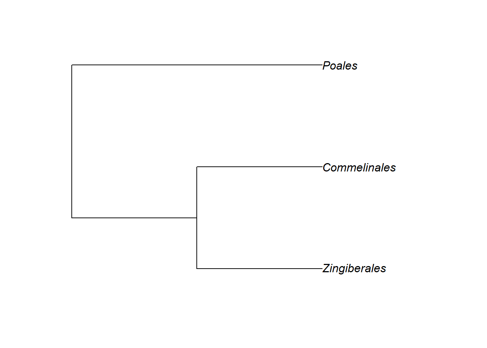
Monocots <- "(((Zingiberales, Commelinales), Poales), Arecales);"
Monocots <- read.tree(text = Monocots)
plot(Monocots)
Monocots <- "((((Zingiberales, Commelinales), Poales), Arecales),(Asparagales, Petrosaviales));"
Monocots <- read.tree(text = Monocots)
plot(Monocots)
Monocots <- "(((((Zingiberales, Commelinales), Poales), Arecales),(Asparagales, Petrosaviales)), Liliales);"
Monocots <- read.tree(text = Monocots)
plot(Monocots)
Monocots <- "((((((Zingiberales, Commelinales), Poales), Arecales),(Asparagales, Petrosaviales)),Liliales),(Pandanales, Dioscoriales));"
Monocots <- read.tree(text = Monocots)
plot(Monocots)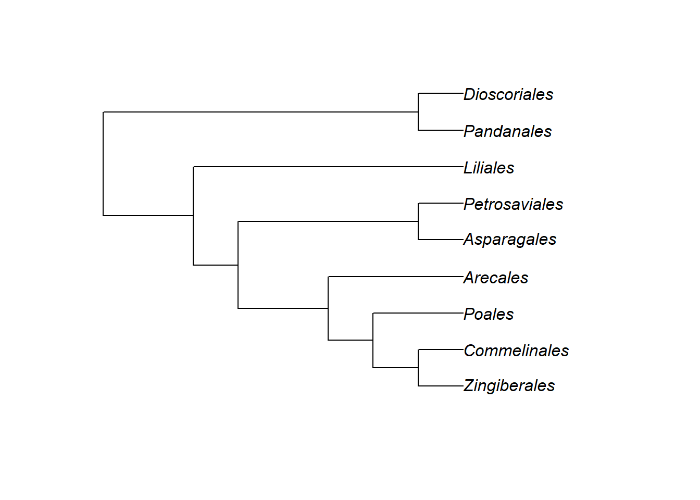
Monocots <- "(((((((Zingiberales, Commelinales), Poales), Arecales),(Asparagales, Petrosaviales)), Liliales),(Pandanales, Dioscoriales)), Alismatales);"
Monocots <- read.tree(text = Monocots)
plot(Monocots)
Monocots <- "((((((((Zingiberales, Commelinales), Poales), Arecales),(Asparagales, Petrosaviales)), Liliales),(Pandanales, Dioscoriales)), Alismatales), Acorales);"
Monocots <- read.tree(text = Monocots)
plot(Monocots) Importe também a árvore das Embriófitas:
Importe também a árvore das Embriófitas:
plants.tree <- "((((((((((((((Eudicots), Monocots), Magnoliids), Chloranthales), Autrobaileyales), Nymphaeales), Amborellales),((((Gnetales, Conifers), Gingkoales), Cycadales))),(((Sphenophytes, Marattiales), Filicales),(Ophioglossaceae, Psilophytes))),(Selaginellales, Lycopodiales)),(Bryophyta)),(Anthocerophyta)),(Marchantiophyta)));"
plants.tree <- read.tree(text = plants.tree)
plot(plants.tree)
Inspecione os objetos de classe phylo criados:
str(Monocots)## List of 3
## $ edge : int [1:20, 1:2] 12 13 14 15 16 17 18 19 19 18 ...
## $ Nnode : int 10
## $ tip.label: chr [1:11] "Zingiberales" "Commelinales" "Poales" "Arecales" ...
## - attr(*, "class")= chr "phylo"
## - attr(*, "order")= chr "cladewise"str(plants.tree)## List of 3
## $ edge : int [1:46, 1:2] 22 23 24 25 26 27 28 29 30 31 ...
## $ Nnode : int 26
## $ tip.label: chr [1:21] "Eudicots" "Monocots" "Magnoliids" "Chloranthales" ...
## - attr(*, "class")= chr "phylo"
## - attr(*, "order")= chr "cladewise"class(Monocots)## [1] "phylo"typeof(plants.tree)## [1] "list"Cheque os componentes dos objetos criados utilizando o operador $:
Monocots$edge## [,1] [,2]
## [1,] 12 13
## [2,] 13 14
## [3,] 14 15
## [4,] 15 16
## [5,] 16 17
## [6,] 17 18
## [7,] 18 19
## [8,] 19 1
## [9,] 19 2
## [10,] 18 3
## [11,] 17 4
## [12,] 16 20
## [13,] 20 5
## [14,] 20 6
## [15,] 15 7
## [16,] 14 21
## [17,] 21 8
## [18,] 21 9
## [19,] 13 10
## [20,] 12 11Monocots$tip.label## [1] "Zingiberales" "Commelinales" "Poales" "Arecales"
## [5] "Asparagales" "Petrosaviales" "Liliales" "Pandanales"
## [9] "Dioscoriales" "Alismatales" "Acorales"Monocots$Nnode## [1] 10plants.tree$edge## [,1] [,2]
## [1,] 22 23
## [2,] 23 24
## [3,] 24 25
## [4,] 25 26
## [5,] 26 27
## [6,] 27 28
## [7,] 28 29
## [8,] 29 30
## [9,] 30 31
## [10,] 31 32
## [11,] 32 33
## [12,] 33 34
## [13,] 34 35
## [14,] 35 1
## [15,] 34 2
## [16,] 33 3
## [17,] 32 4
## [18,] 31 5
## [19,] 30 6
## [20,] 29 7
## [21,] 28 36
## [22,] 36 37
## [23,] 37 38
## [24,] 38 39
## [25,] 39 8
## [26,] 39 9
## [27,] 38 10
## [28,] 37 11
## [29,] 27 40
## [30,] 40 41
## [31,] 41 42
## [32,] 42 12
## [33,] 42 13
## [34,] 41 14
## [35,] 40 43
## [36,] 43 15
## [37,] 43 16
## [38,] 26 44
## [39,] 44 17
## [40,] 44 18
## [41,] 25 45
## [42,] 45 19
## [43,] 24 46
## [44,] 46 20
## [45,] 23 47
## [46,] 47 21plants.tree$tip.label## [1] "Eudicots" "Monocots" "Magnoliids" "Chloranthales"
## [5] "Autrobaileyales" "Nymphaeales" "Amborellales" "Gnetales"
## [9] "Conifers" "Gingkoales" "Cycadales" "Sphenophytes"
## [13] "Marattiales" "Filicales" "Ophioglossaceae" "Psilophytes"
## [17] "Selaginellales" "Lycopodiales" "Bryophyta" "Anthocerophyta"
## [21] "Marchantiophyta"plants.tree$Nnode## [1] 2615.3 Importando árvores nos formatos S3 e S4
15.3.1 Classe phylo (S3)
Importante saber que árvores importadas como classe S3. Primeiro, apenas uma árvore pode ser armazenada como um objeto classe S3. E apenas a topologia, o comprimento dos ramos e os nomes dos terminais são importados. Lembre-se que para acessar instâncias de objetos S3 é utilizado o operator cifrão “$”.
Um objeto de classe phylo é uma lista com os seguintes componentes:
- Edge a two-column matrix where each row represents a branch (or edge) of the tree; the nodes and the tips are symbolized with integers; the n tips are numbered from 1 to n, and the m (internal) nodes from n+1 to n+m (the root being n + 1).
- tip.label a vector of mode character giving the labels of the tips; the order of these labels corresponds to the integers 1 to n in edge.
- Nnode an integer value giving the number of nodes in the tree (m).
- edge.length (opcional) a numeric vector giving the lengths of the branches given by edge.
- node.label (opcional) a vector of mode character giving the labels of the nodes (ordered in the same way than tip.label).
- root.edge (optional) a numeric value giving the length of the branch at the root if it exists.
15.3.2 Classe phylo4 e phylo4d (S4)
Por outro lado, inúmeras árvores podem ser armazenadas como um objeto de classe S4. Além de guardar as mesmas informações dos objetos S3, também pode armazenar outros dados, tais quais o suporte dos ramos entre outras informações sobre os ramos, e caracteres específicos dos terminais. Para acessar as instâncias de objetos S4 utiliza-se o operator arroba “@”. Ambos os operatores são usados para acessar as instâncias de objetos S4, na ordem @ e $.
A classe phylo4 armazena apenas árvores, enquanto a classe phylo4d armazena tanto árvores quanto outros dados associados, como um dataframe contendo dados sobbre os ramos e terminais.
15.4 Personalizando o estilo da árvore
Agora que temos um conjunto de objetos de classe phylo e phylo4, vamos aprender a alterar o design das árvores utilizando alguns dos principais pacotes para filogenia. Vamos conhecer um pacote de cada vez.
15.4.1 Pacote ape
O pacote ape
Perceba que o pacote ape implementou um método para a função plot() do pacote graphics, o plot.phylo(). Então, desde que o objeto seja de classe phylo ou phylo4 (ou ainda phylo4d) não se faz necessário digitar “.phylo” depois de plot:
plot(plants.tree, type = "phylogram") # Default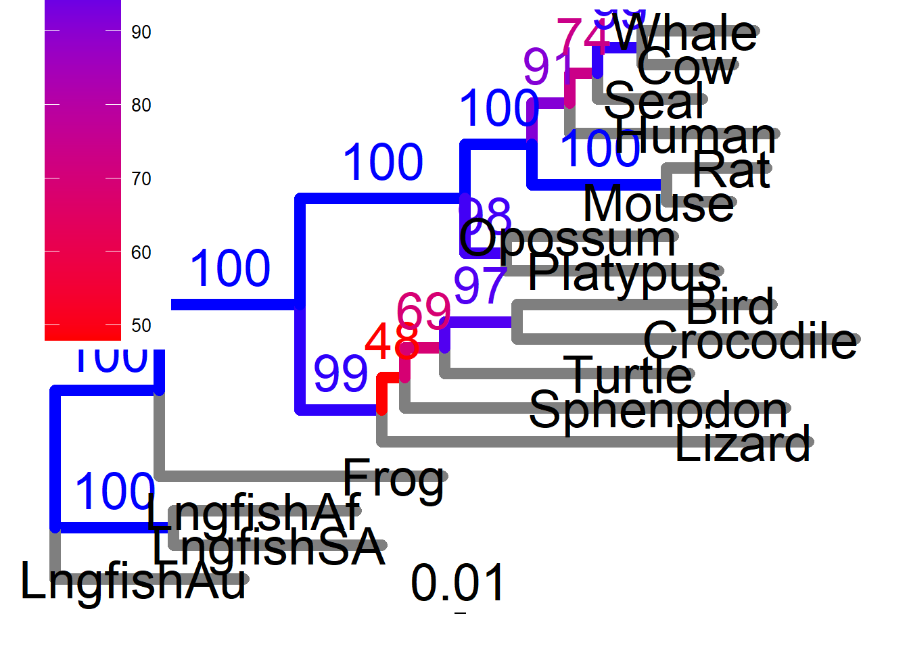
plot(plants.tree, type = "cladogram")
plot(plants.tree, type = "fan")
plot(plants.tree, type = "radial")
Para gerar uma árvore não-enraizada, utilize a função unroot() para retirar a raiz da árvore, e use o argumento type = “unrooted” e lab4ut = “axial” da função plot.phylo():
plot(unroot(plants.tree), type = "unrooted", lab4ut = "axial")Altere a direção da árvore com argumento direction:
plot(Monocots, direction = "leftwards")plot(Monocots, direction = "upwards")
plot(Monocots, direction = "downwards")
Gire o ângulo da árvore com o argumento rotate.tree:
plot(Monocots, type = "fan")
plot(Monocots, type = "fan", rotate.tree = 50)
Abra o ângulo da árvore com argumento open.angle:
plot(plants.tree, type = "fan")
plot(plants.tree, type = "fan", open.angle = 180)
Altere a direção os nomes dos terminais (tip.label) com o argumento lab4ut como “horizontal”:
plot(Monocots, type = "fan", lab4ut="horizontal")
Altere o tamanho da árvore com os argumentos x.lim e y.lim:
plot(plants.tree, x.lim = 25, y.lim = 22)
plot(plants.tree, x.lim = 100, y.lim = 22)
plot(plants.tree, x.lim = 150, y.lim = 22)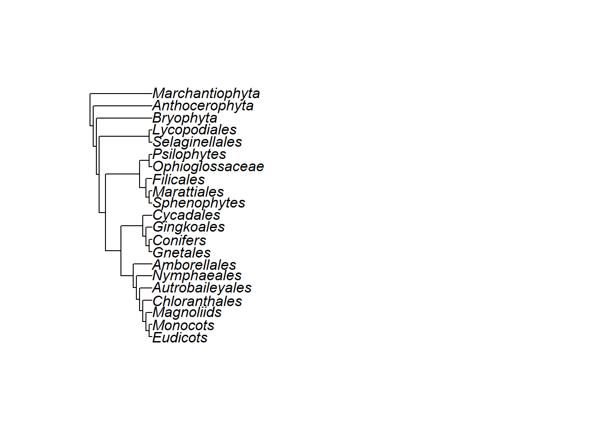
plot(plants.tree, x.lim = 200, y.lim = 30)
plot(plants.tree, x.lim = 250, y.lim = 30)Para executar diversas alterações, mudanças de estilos e anotações na árvore, é preciso saber qual o número associado a cada ramo e aos terminais. Para descobrir esses números usaremos as funções edgelabels(), tiplabels e nodelabels():
plot(Monocots)
edgelabels()
tiplabels()plot(Monocots)
nodelabels()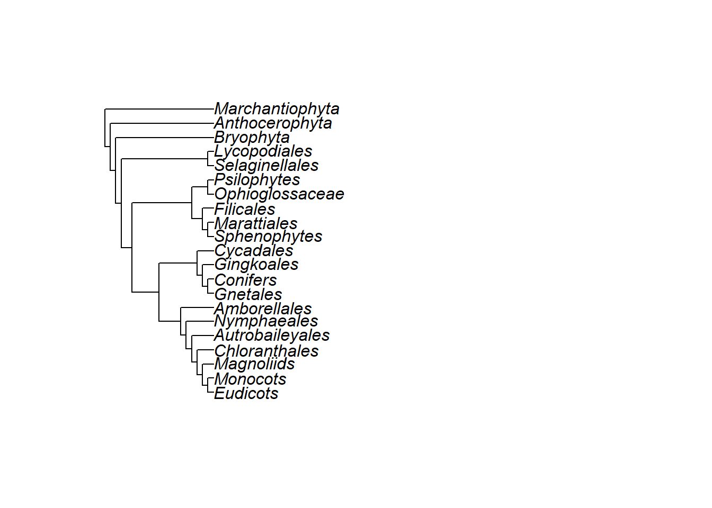
15.4.1.1 Ramos
Altere a espessura dos ramos da árvore com o argumento edge.width: (default: 1)
plot(plants.tree, edge.width = 3)
Altere o formato da linha correspondente aos ramos com o argumento edge.lty (de 1 a 6): (Default: 1)
plot(plants.tree, edge.lty = 2)
Altere a cor dos ramos da árvore com argumento edge.color: (Default: 1)
plot(plants.tree, edge.color = "blue")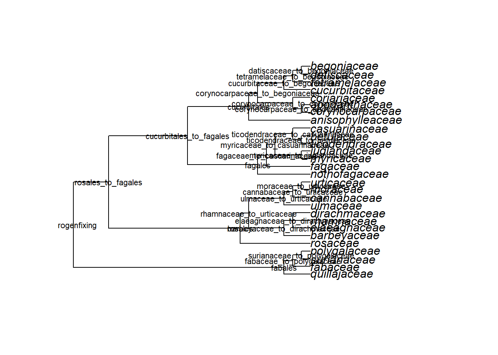
plot(plants.tree, edge.color = c("blue", "red"))plot(plants.tree, edge.color = c("blue", "red", "yellow"))plot(plants.tree, edge.color = 0) # 0 = sem cor
plot(plants.tree, edge.color = 5)
Altere a cor dos ramos selecionados da árvore com função def. A função def gera um vetor com os nomes dos terminais (tip.label):
plot(plants.tree)
nodelabels()
def1 <- def(plants.tree$edge, `30` = "blue", `31` = "blue", `32` = "blue", `33` = "blue",
`34` = "blue", `35` = "blue")
plot(plants.tree, edge.color = def1)
A função def() pode ser utilizada com qualquer outro argumento da função plot.phylo(), mas teremos de indicar o estado de cada um dos nós nodelabels). Vamos repetir o código acima, no qual usamos a função def(), mas vamos incluir mais uma definição, a da espessura dos ramos. Perceba que ao criar o objeto def2 associamos a todos os números do nodelabels o número “1”, exceto os números 38, 39 e 40 que estão associados ao “3”:
plot(plants.tree)
nodelabels()def2 <- def(plants.tree$edge, `1` = 1, `2` = 1, `3` = 1, `4` = 1, `5` = 1, `6` = 1,
`7` = 1, `8` = 1, `9` = 1, `10` = 1, `11` = 1, `12` = 1, `13` = 1, `14` = 1,
`15` = 1, `16` = 1, `17` = 1, `18` = 1, `19` = 1, `20` = 1, `21` = 1, `22` = 1,
`23` = 1, `24` = 1, `25` = 1, `26` = 1, `27` = 1, `28` = 1, `29` = 1, `30` = 1,
`31` = 1, `32` = 1, `33` = 1, `34` = 1, `35` = 1, `36` = 1, `37` = 1, `38` = 3,
`39` = 3, `40` = 3, `41` = 1, `42` = 1, `43` = 1, `44` = 1, `45` = 1, `46` = 1,
`47` = 1, `47` = 1, `48` = 1, `49` = 1)
plot(plants.tree, edge.width = def2, edge.lty = def2)
Altere a cor dos ramos, ou outro parâmetro, com função rep() do pacote base:
plot(plants.tree)
edgelabels()col <- c("blue", rep("red", 2), rep("green", 2), "brown", rep("black", 14), rep("brown",
8), rep("green", 12), rep("red", 6), "blue")
plot(plants.tree, edge.color = col, edge.width = 4)
Plote diferentes tipos de símbolos nos ramos da árvore com a função edgelabels(). Escolha o tipo de símbolo com o argumento pch, equivalente à função points do pacote graphics (veja essa função para descobrir os códigos dos símbolos, valores vão de 0 a 25). O argumento col altera a cor do símbolo. O argumento cex define o tamanho do símbolo (Default: 0). O argumento adj funciona como um eixo x e y para posição do símbolo:
plot(plants.tree)
edgelabels(edge = 6, pch = 3, cex = 0.5, adj = 0)
edgelabels(edge = 6, pch = 3, cex = 0.5, adj = -0.5)
edgelabels(edge = 6, pch = 3, cex = 0.5, adj = 0.5)
edgelabels(edge = 6, pch = 3, cex = 0.5, adj = -1)
edgelabels(edge = 6, pch = 3, cex = 0.5, adj = 1)
edgelabels(edge = 6, pch = 3, cex = 0.5, adj = -1.5)
edgelabels(edge = 6, pch = 3, cex = 0.5, adj = 1.5)
edgelabels(edge = 6, pch = 3, cex = 0.5, adj = 2)
edgelabels(edge = 6, pch = 3, cex = 0.5, adj = 2.5)
15.4.1.2 Terminais
Aumente a distância entre os nomes dos terminais (tip.label) e a árvore com o argumento label.offset: (experimente também outros valores diferentes de 1. (Default: 0)
plot(Monocots, label.offset = 1)
Altere a fonte dos terminais com argumento font (1: sem formato, 2: negrito, 3: italic, 4: negrito e itálico, etc): (Default: 3)
plot(Monocots, font = 4)
Altere o tamanho da fonte dos terminais com argumento cex: (Default: 1)
plot(Monocots, cex = 0.5)
Altere a justificação dos nomes dos terminais com argumento adj (de 0 a 1): (Default: 0)
plot(Monocots, adj = 0.5)
plot(Monocots, adj = 1)
Altere a inclinação dos nomes dos terminais com argumento srt: (Default: 0)
plot(plants.tree, srt = 25)Altere a cor da fonte do terminais com argumento tip.color: (Default: 1)
plot(Monocots, tip.color = "red")plot(Monocots, tip.color = 0) # 0 = branco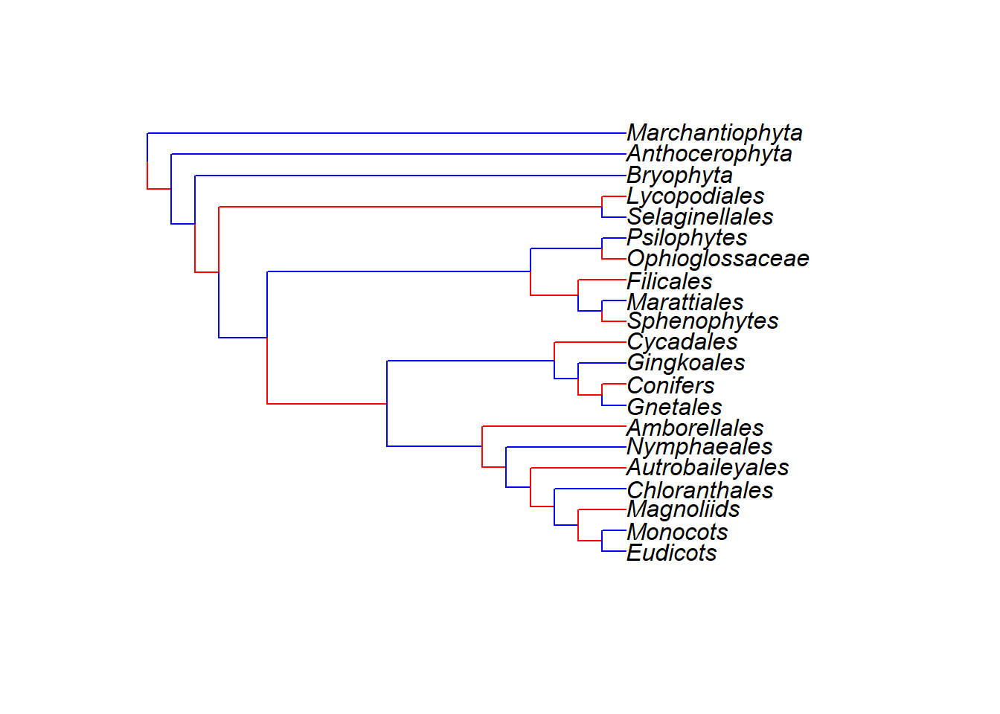
plot(Monocots, tip.color = 4)
Vamos usar a função def() para especificar as cores dos nomes dos terminais, e também, vamos alterar a fonte:
def3 <- def(plants.tree$tip.label, Gnetales = "blue", Filicales = "red")
plot(plants.tree, tip.color = def3)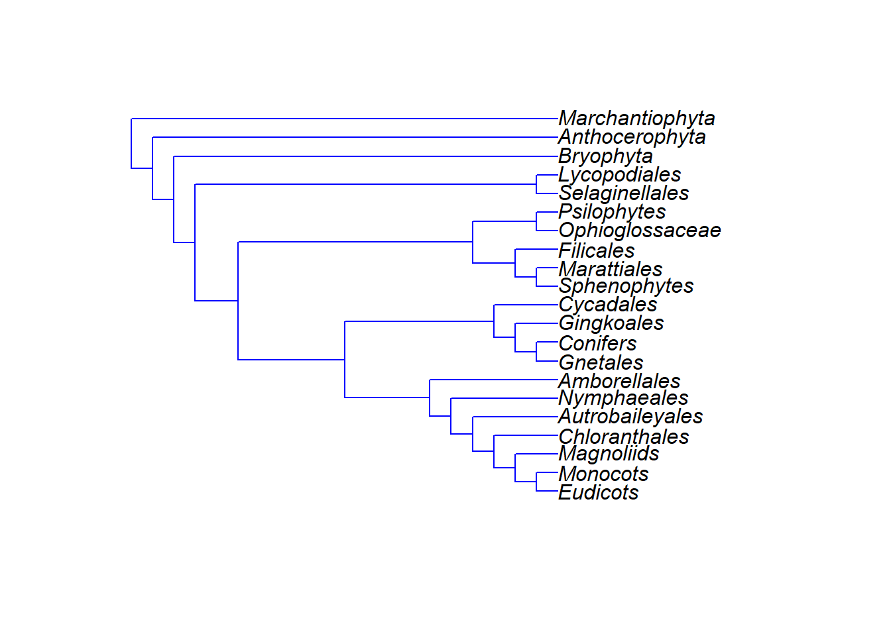
def4 <- def(plants.tree$tip.label, Gnetales = 2, Filicales = 4)
plot(plants.tree, font = def4)
Vamos alterar a cor dos terminais usando função rep():
plot(plants.tree)
tiplabels()
plot(plants.tree, tip.color = c(rep("red", 7), rep("blue", 4), rep("brown", 5), rep("green",
2), rep("black", 3), "yellow"))
Inclua os nomes (tiplabels) apenas para determinados terminais:
- Primeiro, selecione os números dos terminais:
plot(plants.tree)
tiplabels()
i <- c(4, 10, 17)- Depois, vamos plotar a árvore sem os nomes dos terminais (
show.tip.label = FALSE), introduzir um recuo com o argumentox.lim, e plotar os nomes dos terminais com a funçãotiplabels():
plot(plants.tree, show.tip.label = FALSE, x.lim = 30)
tiplabels(plants.tree$tip.label[i], i, adj = 0)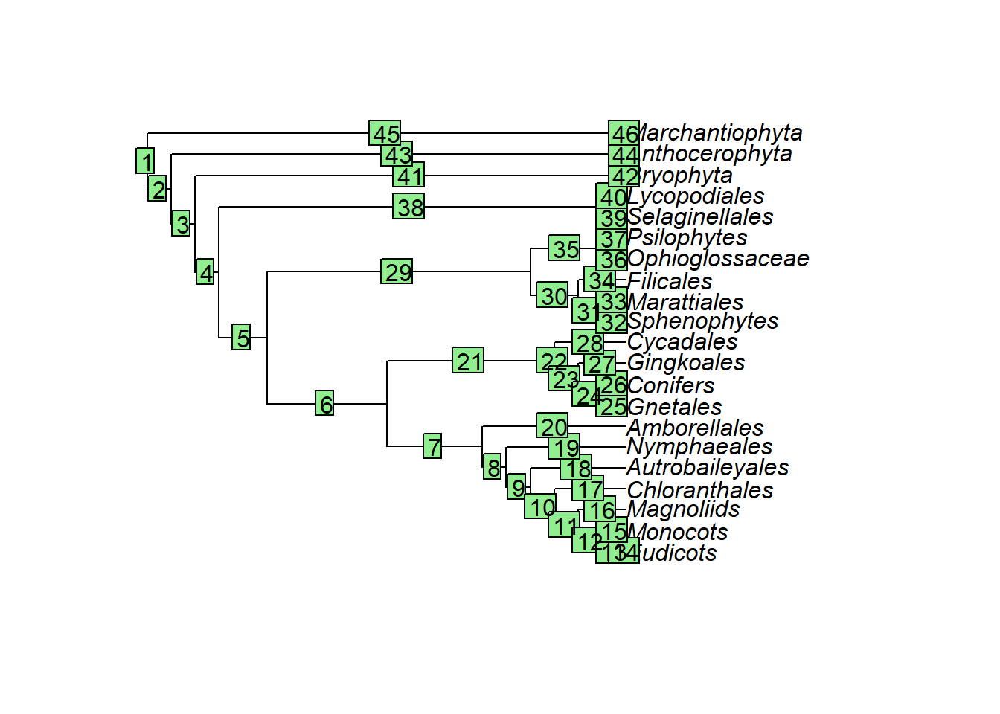
Retire o quadro em volta do nome com o argumento frame = “none”:
plot(plants.tree, show.tip.label = FALSE, x.lim = 30)
tiplabels(plants.tree$tip.label[i], i, adj = 0, frame = "none")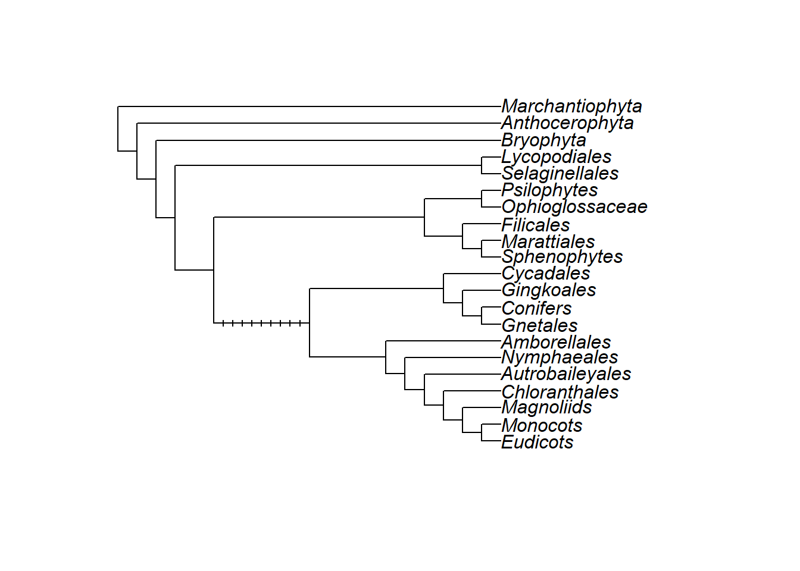
Plote diferentes tipos de símbolos terminais com a função tiplabels(). Com o argumento label.offset, afaste um pouco os nomes dos terminais da árvore:
plot(plants.tree, label.offset = 1)
tiplabels(tip = 1, pch = 20)
tiplabels(tip = 2, pch = 19)
tiplabels(tip = 3, pch = 18)
tiplabels(tip = 4, pch = 17)
tiplabels(tip = 5, pch = 16)
tiplabels(tip = c(6,7), pch = c(15,14))Use também os argumentos cex, para aumentar ou diminuir o tamanho do símbolo, e adj, para afastar o símbolo na horizontal, da função tiplabels(); também altere a cor do fundo do símbolo com o argumento bg:
plot(plants.tree, label.offset = 2.5)
tiplabels(pch = 19, col = c("yellow", "red", "blue"), adj = 1.4, cex = 1.5)
tiplabels(pch = 21, bg = c("purple","pink","brown"), adj = 2.4, cex = 1.5)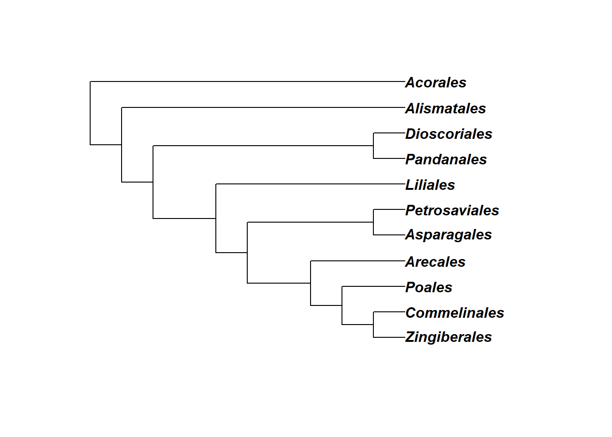
Plote um símbolo nos terminais interativamente na área de plotagem: (Não esqueça de retirar o símbolo # da frente de cada linha)
# f <- function(col) {
# o <- identify(plants.tree)
# tiplabels(tip=o$tips, pch = 19, col = col)
# }
# f("red") # Clique no terminal para adicionar o símbolo
# f("green") # Faça o mesmo15.4.1.3 Nós
Plote os números associados aos nós com a função nodelabels():
plot(plants.tree)
nodelabels()Enraizar uma árvore com função root():
plot(root(plants.tree, 4)) # Enraizando o nó número 4.## Warning in min(x): nenhum argumento não faltante para min; retornando Inf## Warning in max(x): nenhum argumento não faltante para max; retornando -Inf
Rotacionar uma árvore com função rotate():
plot(plants.tree)plot(ape::rotate(plants.tree, 25))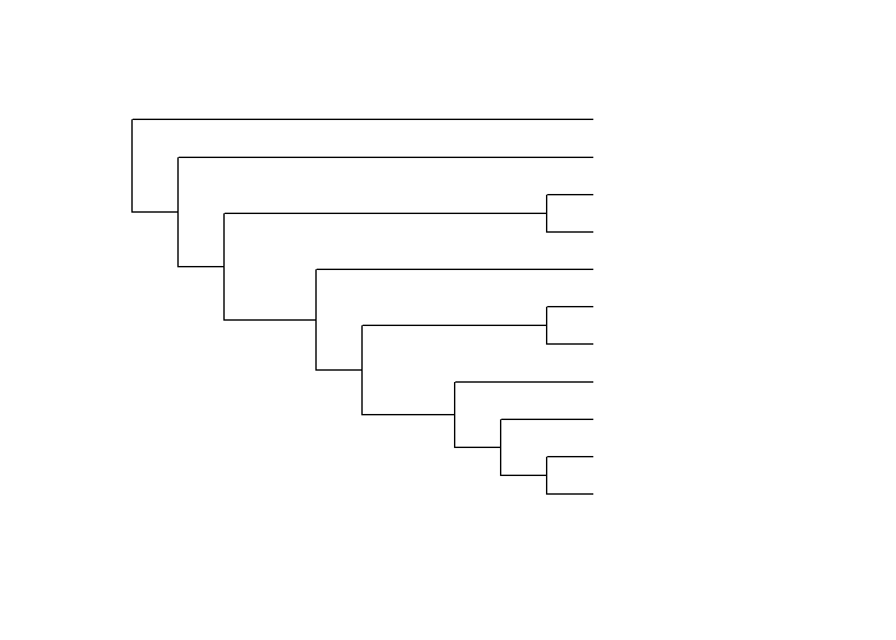
# OBS: O comando 'ape::rotate' é um chamamento específico da função rotate do
# pacote ape. Portanto, os operadores '::' vindos após o nome de um pacote,
# define a exata função do pacote. Isso é especialmente útil para não precisar
# carregar o pacote inteiro ou quando existe duplicidade de nome de funções
# entre pacotes distintos.Plote diferentes símbolos nos nós:
plot(Monocots)
nodelabels(pch = 20)Plote diferentes símbolos nos nós determinados:
plot(plants.tree)
nodelabels(node = 27, pch = 19)
nodelabels(node = 28, pch = 20)
nodelabels(node = 29, pch = 21)
Plote um símbolo nos nós interativamente: (Retire os símbolos de # para rodar as linhas de comando)
# f2 <- function(col) {
# o <- identify(Monocots)
# tiplabels(node=o$nodes, pch = 19, col = col)
# }
# f2("yellow") # Clique no terminal para adicionar o símbolo
# f2("blue") # Faça o mesmo15.4.2 Pacote phylocanvas
library(phylocanvas)
tree <- read.tree(text = "(A:2, B:2, (C:1, D:1) E:1) F;")
phylocanvas(tree)15.4.3 Pacote phytools
O pacote phytools foi desenvolvido por Liam J. Revell.

Carregue o pacote:
library(phytools)Plote a árvore com a função plotTree():
plotTree(plants.tree)
Altere o tipo de árvore com o argumento type (phylogram [Default]; fan; cladogram); o tamanho da fonte com o argumento fsize; e o estilo da fonte com ftype (reg = regular [default]; i = itálico; b = negrito; bi = itálico e negrito):
plotTree(plants.tree, type = "fan", fsize = 1, ftype = "i", offset=1)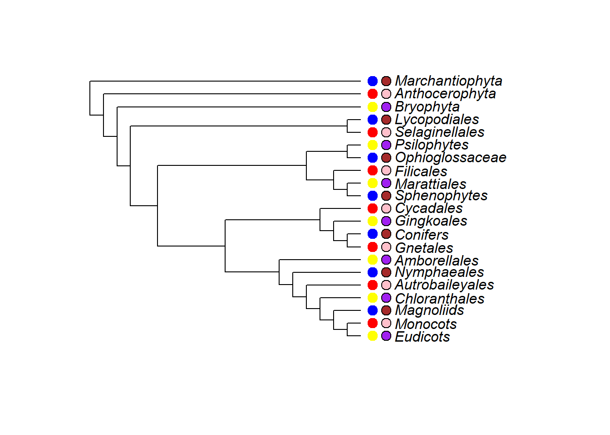
Plote uma árvore com as bordas arredondadas com a função roundPhylogram:
roundPhylogram(plants.tree)
Aplicar organização em escada nos clados com a função ladderize():
plot(ladderize(plants.tree))
plot(ladderize(plants.tree, FALSE))Rotacione determinados nós com a função rotateNodes():
rt.15 <- rotateNodes(Monocots, 15)
plotTree(rt.15, node.numbers = T)Rotacionando toda a árvore:
rt.all <- rotateNodes(Monocots, "all")
plotTree(rt.all, node.numbers = T)
Enraize a árvore a partir de um determinado nó:
rr.13 <- root(Monocots, node = 13)
plotTree(rr.13, node.numbers = T)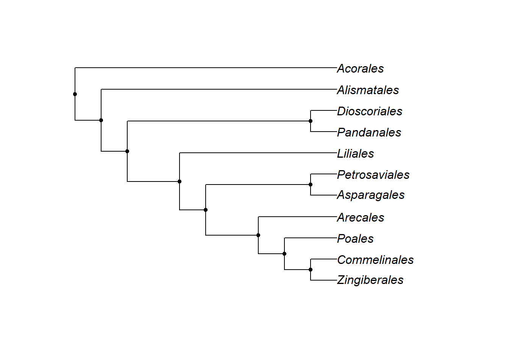
rr.14 <- root(Monocots, node = 14)
plotTree(rr.14, node.numbers = T)Enraize a árvore interativamente: (Retire os operadores # da frente dos comandos)
# rr.interactive <- reroot(tree, interactive = TRUE)
# plotTree(rr.interactive, node.numbers = T)Compare a topologia das árvores com a função all.equal():
# A árvore rotacionada é igual à original?
all.equal(Monocots, rt.all)## [1] TRUE# A árvore reenraizada é igual à original?
all.equal(Monocots, rr.13)## [1] FALSE# As árvores original e reenraizada tornadas não-enraizadas são iguais:
all.equal(unroot(Monocots), unroot(rr.13))## [1] TRUECorte uma árvore ao meio, plotando-a em duas colunas, com função splitplotTree. A função rcoal gera árvores aleatórias com número determinado de terminais:
trees <- rcoal(50)
splitplotTree(trees)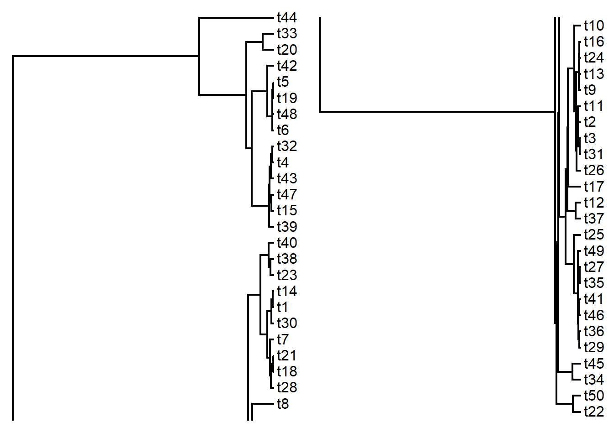
15.4.3.2 Terminais
Plote a árvore sem os terminais:
plotTree(plants.tree, ftype = "off")
Afaste os nomes dos terminais da árvore com o argumento offset:
plotTree(plants.tree, offset = 1)Descobra o número dos terminais:
species <- c("Magnoliids", "Gingkoales")
ts <- sapply(species, grep, plants.tree$tip.label)
ts## Magnoliids Gingkoales
## 3 10plants.tree$tip.label[ts]## [1] "Magnoliids" "Gingkoales"Adicione uma seta em determinados terminais:
plotTree(plants.tree, type = "fan", offset=1)
add.arrow(plants.tree, tip = ts, arrl = 0.3, hedl = 0.1)
Retire terminais determinados terminais:
drop.species <- drop.tip(plants.tree, species)
plotTree(drop.species, type = "fan", ftype = "i", offset=1)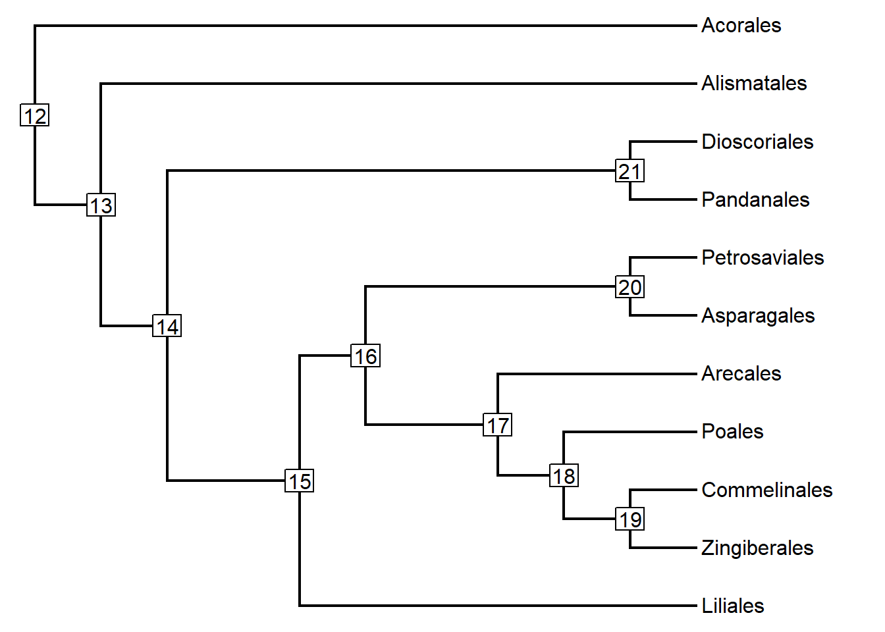
15.4.4 Pacote ggtree
O pacote ggtree
Carregue os pacotes:
library(ggtree)
library(ggplot2)Plote a árvore com a função ggtree():
ggtree(plants.tree)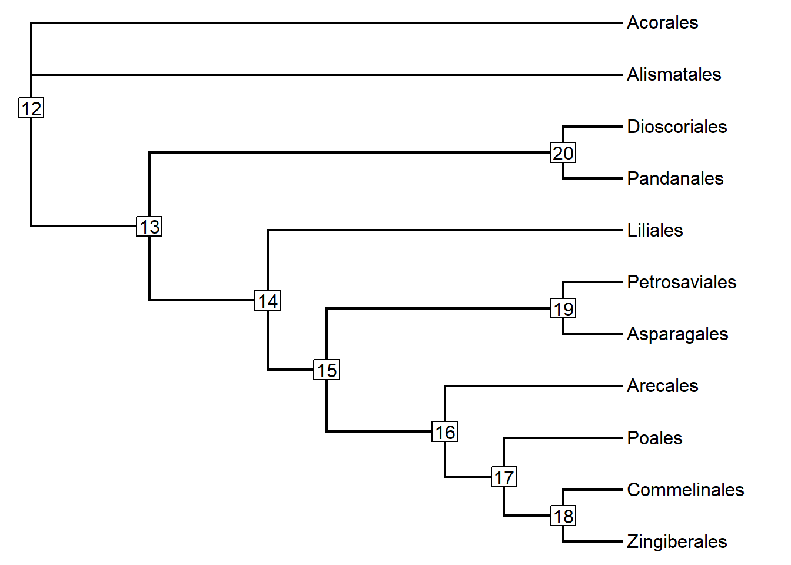
Escolha o tipo de árvore com o argumento layout: (Default: “rectangular)
ggtree(plants.tree, layout = "rectangular")
ggtree(plants.tree, layout = "slanted") 
ggtree(plants.tree, layout = "circular")
ggtree(plants.tree, layout = "radial")
ggtree(plants.tree, layout = "equal_angle")ggtree(plants.tree, layout = "daylight")## Average angle change [1] 0.0769922723842788## Average angle change [2] 0.025214299608738ggtree(plants.tree, layout = "fan", open.angle = 120)## Scale for 'y' is already present. Adding another scale for 'y', which will
## replace the existing scale.
Gire a árvore do tipo circular com a função rotate_tree():
ggtree(plants.tree, layout = 'circular')rotate_tree(ggtree(plants.tree, layout = 'circular'), 60)## Coordinate system already present. Adding new coordinate system, which will replace the existing one.
Aplicar a ordenação em escada (ladderize):
ggtree(plants.tree, ladderize = FALSE)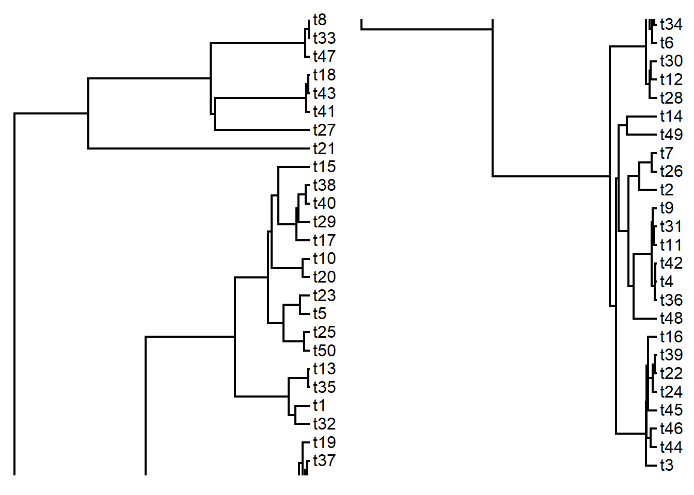
ggtree(plants.tree, ladderize = TRUE)Altere a cor do fundo com função theme_tree(). O operador + adiciona diferentes funções na mesma plotagem:
ggtree(plants.tree) + theme_tree()ggtree(plants.tree) + theme_tree(bgcolor = "gray")ggtree(plants.tree) + theme_tree(bgcolor = "lightblue")
Altere a direção da árvore com as funções scale_x_reverse() e coord_flip() do pacote ggplot2:
ggtree(plants.tree) + scale_x_reverse()
ggtree(plants.tree) + coord_flip()
ggtree(plants.tree) + scale_x_reverse() + coord_flip()
Defina o tamanho da árvore com a função coord_cartesian do pacote ggplot:
ggtree(plants.tree) + coord_cartesian(xlim = c(0, 50), ylim = c(0, 22))
Defina o limite do eixo x com função xlim():
ggtree(plants.tree, layout='circular') + xlim(-20, 15)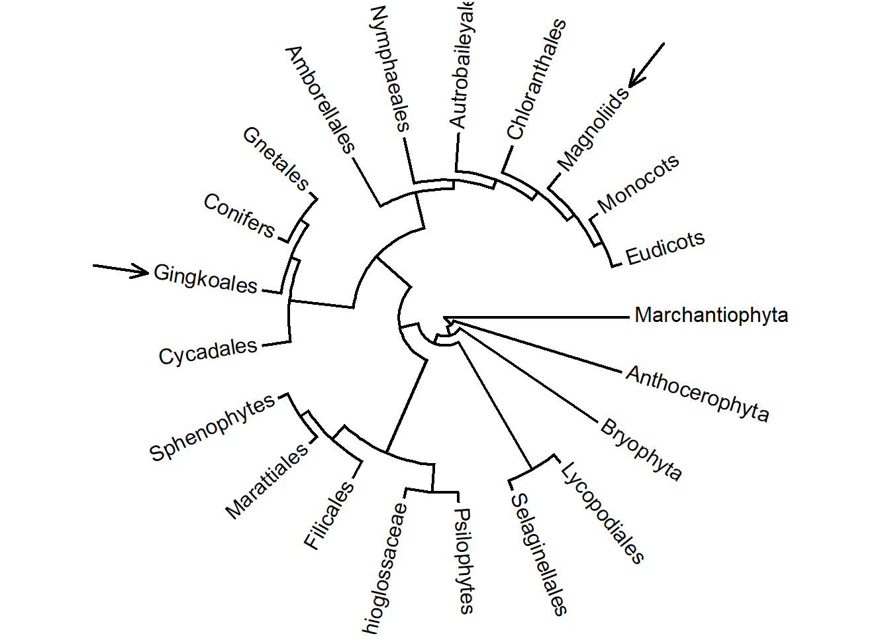
Adicionando escala com a função geom_treescale():
ggtree(plants.tree) + geom_treescale()
Altere os parâmetros da escala com argumentos específicos:
ggtree(plants.tree) + geom_treescale(x = 1, y = 20, width = 1, color = 'red', fontsize = 4, linesize = 2, offset = 1)15.4.4.1 Ramos
Altere a cor da linha da árvore:
ggtree(plants.tree, color = "firebrick")Altere o tipo de linha da árvore: (Default: “solid”)
ggtree(plants.tree, lty = "solid")
ggtree(plants.tree, lty = "dotted")
ggtree(plants.tree, lty = "dashed")
ggtree(plants.tree, lty = "dotdash")
ggtree(plants.tree, lty = "longdash")
ggtree(plants.tree, lty = "twodash")
ggtree(plants.tree, lty = "F1")
Altere a espessura da linha da árvore: (Default: 0)
ggtree(plants.tree, size = 2)
Altere parâmetros estéticos dos ramos de acordo com os clados com a função groupClade():
- Primeiro visualize os números dos nós:
ggtree(Monocots) + geom_text2(aes(subset=!isTip, label=node), hjust=-.3)
- Selecione o clado que terá suas configurações alteradas:
group <- groupClade(Monocots, .node=16)- Altere a cor com o argumento
colorda funçãoaes():
ggtree(group, aes(color=group))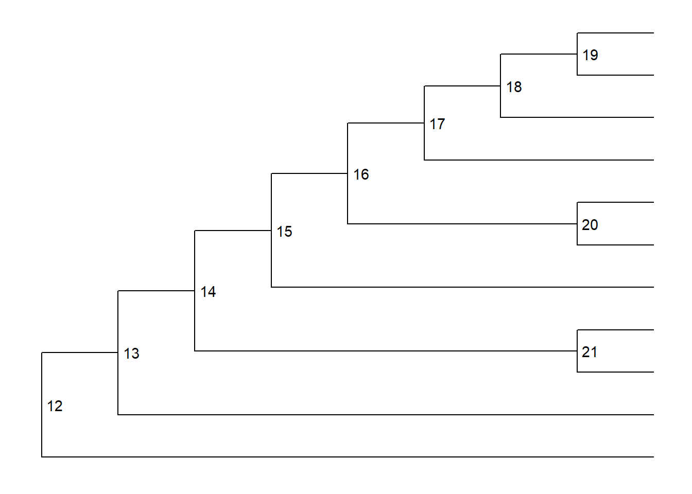
- Defina a cor dos grupos com a função
scale_color_manual() do pacoteggplot2:
ggtree(group, aes(color = group)) + scale_color_manual(values = c("black", "firebrick"))
- Altere o tipo de linha com o argumento
linetypeda funçãoaes():
ggtree(group, aes(linetype=group))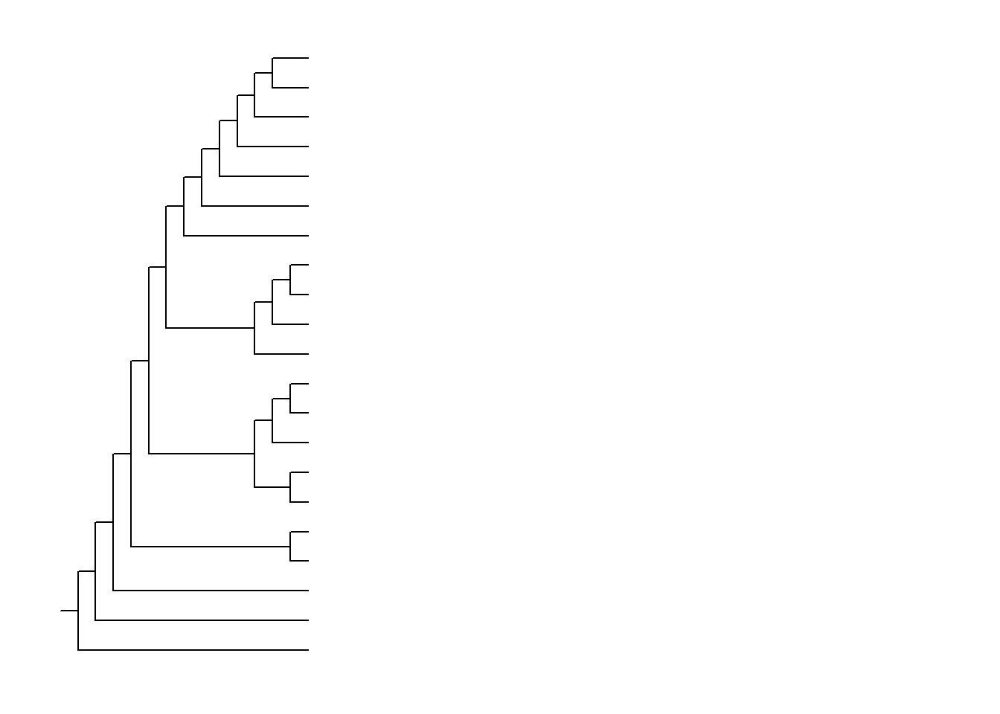
- Defina o tipo de linha com a função
scale_linetype_manual() do pacoteggplot2:
ggtree(group, aes(linetype = group)) + scale_linetype_manual(values = c(3, 2))- Altere a espessura da linha com o argumento
sizeda funçãoaes():
ggtree(group, aes(size = group))## Warning: Using size for a discrete variable is not advised.
- Defina o tamanho da linha com a função
scale_size_manual() do pacoteggplot2:
ggtree(group, aes(size = group)) + scale_size_manual(values = c(1, 1.5))
- Altere e defina a transparência da linha com o argumento
alphada funçãoaes():
ggtree(group, aes(alpha=group)) + scale_alpha_manual(values = c(1/2,1/5))
- Utilize quantos clados forem necessários:
group2 <- groupClade(Monocots, .node = c(17, 20, 21))
ggtree(group2, aes(color = group, linetype = group, size = group))Adicione uma escala de cores contínuas com função scale_color_continuous() do pacote ggplot2:
# ggtree(tree, aes(color = posterior)) +
# scale_color_continuous(low = "green", high = "red") +
# theme(legend.position = "bottom")Adicione barras com a maior densidade posterior (HPD) nos nós, usando um vetor do tipo ‘double’ (valor min-máx), com a função geom_range():
# ggtree(beast_tree) + geom_tiplab() + geom_range("length_0.95_HPD", color = 'red', size = 2, alpha = .5)15.4.4.2 Terminais
Adicione os nomes dos terminais com a função geom_tiplab():
ggtree(plants.tree) + geom_tiplab() + coord_cartesian(xlim = c(0, 50), ylim = c(0, 22))
Adicione os nomes dos terminais apenas para um dos clados marcados no objeto group criado na seção a cima:
ggtree(group) + geom_tiplab(aes(subset = (group == 1)))
ggtree(group) + geom_tiplab(aes(subset = (group == 0)))
Adicione determinados nomes dos terminais:
ggtree(plants.tree) + geom_tiplab(aes(subset = (node %in% c(1, 2, 3, 4))))ggtree(Monocots) + geom_tiplab(aes(subset = (node %in% c(1, 2, 3, 4))), color = c("blue", "red", "green", "pink"))
Crie grupos de terminais utilizando vetores com nomes dos terminais ou números com função groupOTU():
groupOTU(ggtree(plants.tree), c("Monocots", "Eudicots")) + aes(color = group) + geom_tiplab()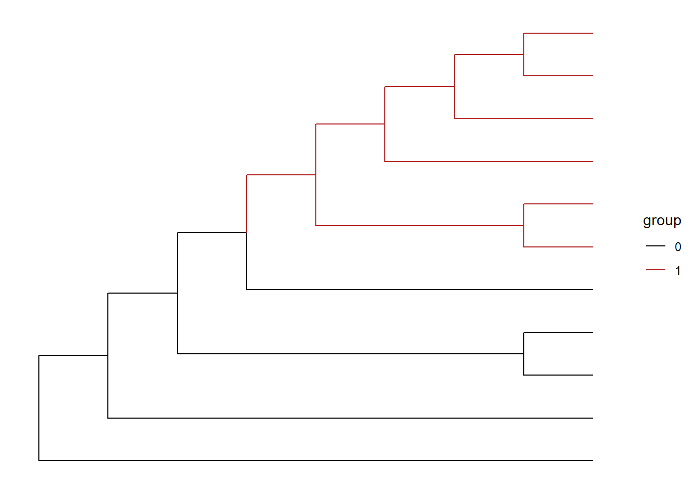
groupOTU(ggtree(plants.tree), 1:5) + aes(color = group) + geom_tiplab()groupOTU(ggtree(plants.tree), c(1:5,10)) + aes(color = group) + geom_tiplab()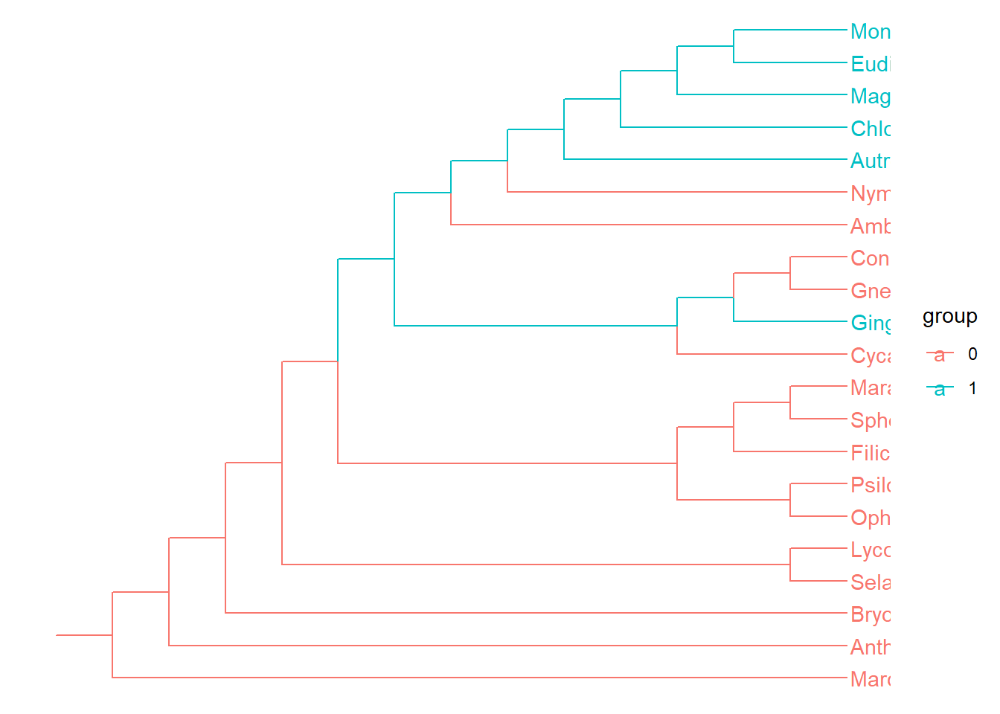
Altere alguns parâmetros estéticos dos nomes dos terminais com argumentos específicos:
ggtree(plants.tree) + geom_tiplab(offset = 0.5, col = "blue", size = 1.8) + coord_cartesian(xlim = c(0, 50), ylim = c(0, 22))
Adicione os nomes dos terminais em árvores do tipo circular com função geom_tiplab2(), e veja a diferença entre a função geom_tiplab():
ggtree(plants.tree, layout = "circular") + geom_tiplab(offset = 0.5, size = 1.8)ggtree(plants.tree, layout = "circular") + geom_tiplab2(offset = 0.5, size = 1.8)Adicione símbolos nos terminais com função geom_tippoint():
ggtree(plants.tree) + geom_tippoint()
Altere o tipo do símbolo nos terminais com o argumento shape. A coloração dos símbolos com fundo colorido é definida com o argumento fill:
ggtree(plants.tree) + geom_tippoint(shape = 22, fill="red")
Adicione símbolos em um determinado terminal:
ggtree(Monocots) + geom_tippoint(aes(subset = node == 5))
Adicionando nomes dos clados com função geom_cladelabel():
ggtree(Monocots) + geom_cladelabel(node = 17, label = "Clade A") + geom_cladelabel(node = 20, label = "Clade B") + coord_cartesian(xlim = c(0, 10), ylim = c(0, 12))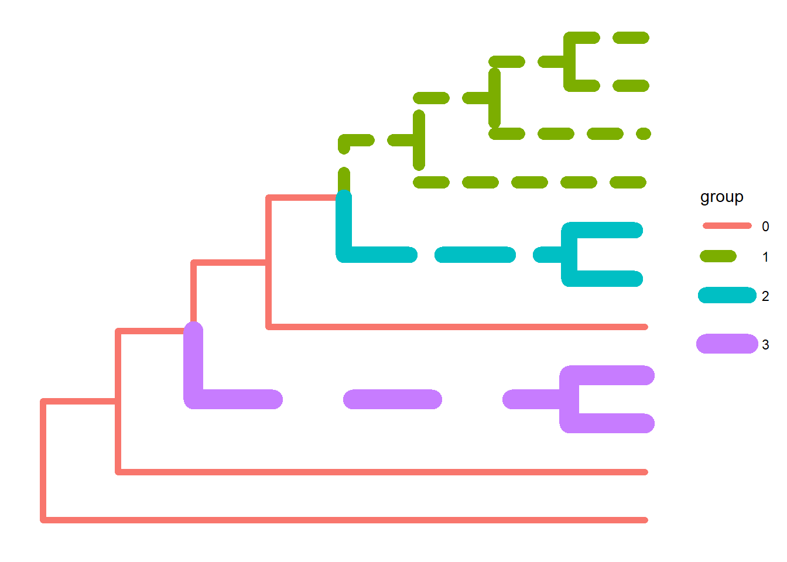
Altere parâmetros estéticos com argumentos específicos:
ggtree(Monocots) + geom_cladelabel(node = 17, label = "Clade A", align = T, color = 'red', angle = 45) + geom_cladelabel(node = 20, label = "Clade B", align = T, color = 'blue', angle = 45) + coord_cartesian(xlim = c(0, 10), ylim = c(0, 12))
Coloque uma caixa em volta do nome do clado com argumento geom():
ggtree(Monocots) + geom_cladelabel(node = 17, label = "Clade A", geom = 'label', fill = 'lightblue') + geom_cladelabel(node = 20, label = "Clade B", geom = 'label', fill = 'lightgreen') + coord_cartesian(xlim = c(0, 10), ylim = c(0, 12))
Adicione uma barra com função geom_strip():
ggtree(Monocots) + geom_strip(2, 4, barsize = 2, color = 'red') + geom_strip(8, 6, barsize = 2, color = 'blue')
Destaque clados com função geom_hilight():
tree4 <- pbtree(n = 50, scale = 100)
ggtree(tree4, layout="circular") + geom_hilight(node = 72, fill = "steelblue", alpha = .6) + geom_hilight(node = 91, fill = "darkgreen", alpha = .6)
Destaque clados com função geom_hilight_encircle():
#ggtree(tree4, layout = "circular") + geom_hilight_encircle(node = 72) + geom_hilight_encircle(node = 91, fill = 'darkgreen')Destaque os clados com highlight interativamente: (Retire os operadores # da frente dos comandos)
# p <- ggtree(tree4)
# cols <- rainbow(5)
# ggtree(tree)
# for (i in 1:5) {
# p <- p + geom_hilight(identify(p), fill=cols[i])
# print(p)
# }15.4.4.3 Nós
Adicione os números dos nós com a função geom_text2():
ggtree(Monocots) + geom_text2(aes(subset = !isTip, label = node))
Ajuste a posição do dos números dos nós com os argumentos hjust e vjust:
ggtree(Monocots) + geom_text2(aes(subset = !isTip, label = node), hjust = 1.1, vjust = -.2)Adicione símbolos aos nós com função geom_nodepoint():
ggtree(Monocots) + geom_nodepoint()
Adicione um símbolo em um determinado nó:
ggtree(Monocots) + geom_nodepoint(aes(subset = (node == 16)))ggtree(Monocots) + geom_nodepoint(aes(subset = (node == c(16, 21))))Altere os parâmetros estéticos com argumentos específicos. O argumento alpha altera a transparência do símbolo:
ggtree(Monocots) + geom_nodepoint(color = "#b5e521", alpha = 1/4, size = 10)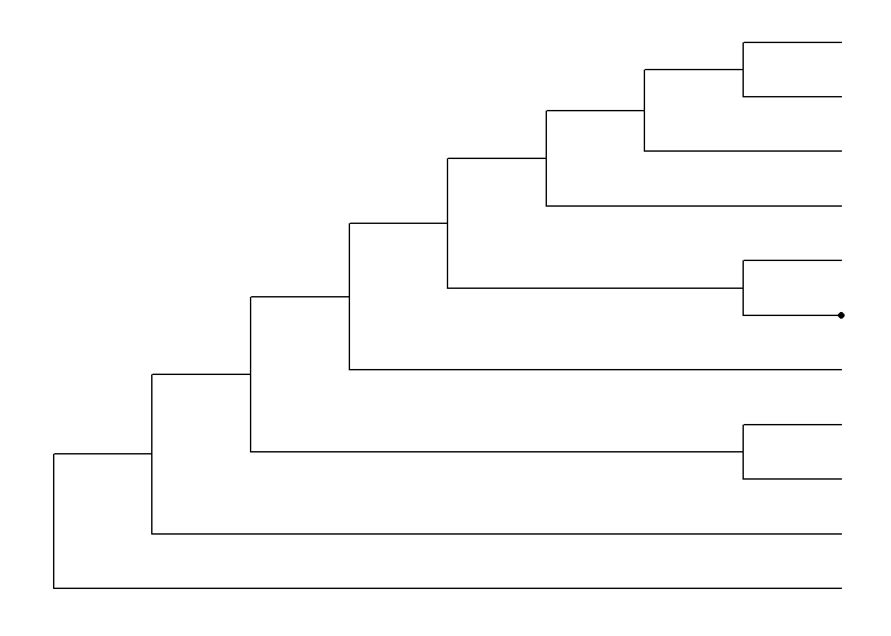
Adicione símbolos aos nós por clados com a já mencionada função groupClade():
Adicione símbolos aos nós com função geom_point2(): (OBS: os símbolos também são adicionados nos terminais)
ggtree(Monocots) + geom_point2()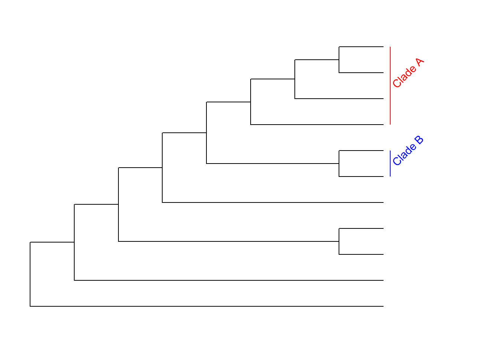
Rotacione todos os nós a partir de um dado nó com função rotate e a função pipe %>%:
ggtree(Monocots) + geom_text2(aes(subset = !isTip, label = node)) + geom_tiplab()ggtree(Monocots) %>% ggtree::rotate(16) + geom_text2(aes(subset = !isTip, label = node)) + geom_tiplab()
Rotacione interativamente os nós: (Retire o operador # da frente dos comandos)
# p <- ggtree(plants.tree) + geom_tiplab() + coord_cartesian(xlim = c(0, 50), ylim = c(0, 22))
# for (i in 1:10) {
# p <- p %>% ggtree::rotate(identify(p))
# print(p)
# }Rotacione apenas determinados nós-irmãos com a função flip():
ggtree(Monocots) + geom_text2(aes(subset = !isTip, label = node)) + geom_tiplab()
flip(ggtree(Monocots), 17, 20) + geom_text2(aes(subset = !isTip, label = node)) + geom_tiplab()
Colapse nós com função colapse():
ggtree(Monocots) + geom_text2(aes(subset = !isTip, label = node), hjust = -.3) + geom_tiplab() + coord_cartesian(xlim = c(0, 10), ylim = c(0, 12))ggtree(Monocots) %>% collapse(17) + geom_text2(aes(subset = !isTip, label = node), hjust = -.3) + geom_tiplab() + coord_cartesian(xlim = c(0, 10), ylim = c(0, 12))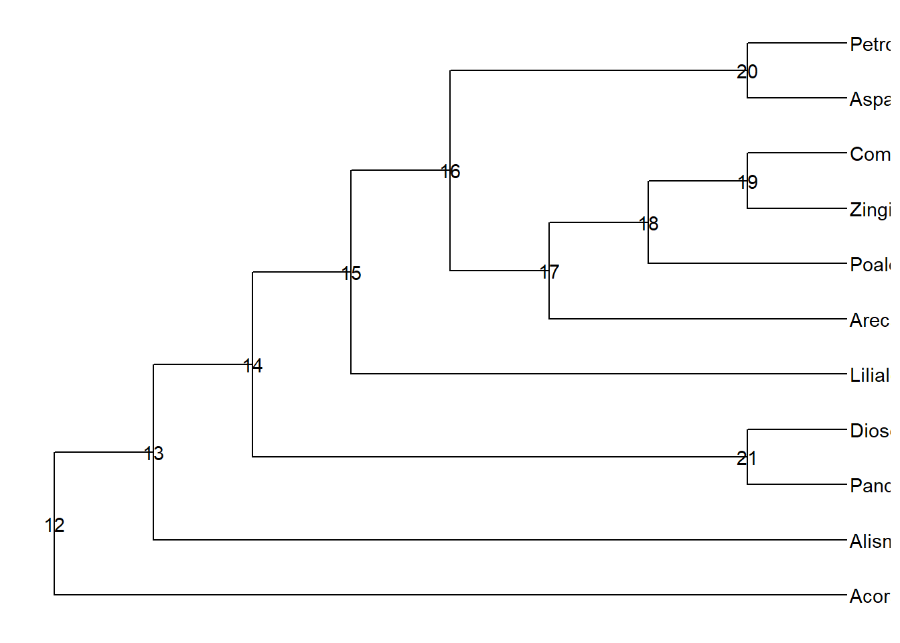
Introduza um símbolo em um nó colapsado:
ggtree(Monocots) %>% ggtree::collapse(17) + geom_tiplab() + geom_point2(mapping = aes(subset=(node == 17)), size = 5, shape = 23, fill = "steelblue") + geom_tiplab(mapping = aes(subset = (node == 71), label = node), offset = 0.2) + coord_cartesian(xlim = c(0, 10), ylim = c(0, 12))
Introduza um triângulo em 1 nó colapsado com a função geom_polygon() do pacote ggplot2:
triangle=data.frame(x = c(5, 6, 6), y = c(8, 9, 7))
ggtree(Monocots) %>% ggtree::collapse(17) + geom_tiplab() + geom_polygon(data = triangle, fill = "darkgray") + coord_cartesian(xlim = c(0, 10), ylim = c(0, 12))
15.5 Anotando dados na árvore usando R
Depois de plotar a árvore e alterar seu estilo, personalizando os nomes dos terminais e os ramos (linhas da árvore), vamos aprender a fazer anotações nos nós, ramos e nos terminais, tais como: os valores de suporte dos nós, comprimento dos ramos, plotar símbolos, gráficos de barras, pizzas, etc.
15.5.1 Pacote ape
15.5.1.1 Ramos
Anotando texto nos ramos:
- Vamos plotar etiquetas e textos nos ramos com a função
edgelabels(). Com o argumentoframeescolha se incluirá uma caixa de texto com formato circular (“circle”), com ângulos retos (“rect”, default), ou sem caixa de texto (“none”). Com o argumentobgpode alterar a cor de fundo da caixa de texto:
plot(plants.tree)
edgelabels(edge = 29, "Monilófitas", cex = 0.8, frame = "rect", bg = "yellow")
edgelabels(edge = 21, "11", cex = 0.8, frame = "circle", bg = "lightblue")
edgelabels(edge = 7, "Angiospermas", frame = "none", cex = 0.8, adj = c(0.5, -0.5))- Vamos utilizar a árvore na qual plotamos símbolos nos ramos para anotarmos texto sobre eles:
plot(plants.tree)
edgelabels(edge = 6, pch = 3, cex = 0.5, adj = 0)
edgelabels(edge = 6, pch = 3, cex = 0.5, adj = -0.5)
edgelabels(edge = 6, pch = 3, cex = 0.5, adj = 0.5)
edgelabels(edge = 6, pch = 3, cex = 0.5, adj = -1)
edgelabels(edge = 6, pch = 3, cex = 0.5, adj = 1)
edgelabels(edge = 6, pch = 3, cex = 0.5, adj = -1.5)
edgelabels(edge = 6, pch = 3, cex = 0.5, adj = 1.5)
edgelabels(edge = 6, pch = 3, cex = 0.5, adj = 2)
edgelabels(edge = 6, pch = 3, cex = 0.5, adj = 2.5)
edgelabels(edge = 6, 1, cex = 0.5, adj = c(7.3, -0.7), frame = "none")
edgelabels(edge = 6, 2, cex = 0.5, adj = c(5.5, -0.7), frame = "none")
edgelabels(edge = 6, 3, cex = 0.5, adj = c(3.9, -0.7), frame = "none")
edgelabels(edge = 6, 4, cex = 0.5, adj = c(2.3, -0.7), frame = "none")
edgelabels(edge = 6, 5, cex = 0.5, adj = c(0.5, -0.7), frame = "none")
edgelabels(edge = 6, 6, cex = 0.5, adj = c(-1.2, -0.7), frame = "none")
edgelabels(edge = 6, 7, cex = 0.5, adj = c(-2.8, -0.7), frame = "none")
edgelabels(edge = 6, 8, cex = 0.5, adj = c(-4.5, -0.7), frame = "none")
edgelabels(edge = 6, 9, cex = 0.5, adj = c(-6.3, -0.7), frame = "none")- Podemos também escrever um texto inclinado usando o argumento
srt:
plot(plants.tree)
edgelabels(edge = 6, pch = 3, cex = 0.5, adj = 0)
edgelabels(edge = 6, pch = 3, cex = 0.5, adj = -0.5)
edgelabels(edge = 6, pch = 3, cex = 0.5, adj = 0.5)
edgelabels(edge = 6, pch = 3, cex = 0.5, adj = -1)
edgelabels(edge = 6, pch = 3, cex = 0.5, adj = 1)
edgelabels(edge = 6, pch = 3, cex = 0.5, adj = -1.5)
edgelabels(edge = 6, pch = 3, cex = 0.5, adj = 1.5)
edgelabels(edge = 6, pch = 3, cex = 0.5, adj = 2)
edgelabels(edge = 6, pch = 3, cex = 0.5, adj = 2.5)
edgelabels(edge = 6, "Caráter 1", cex = 0.5, frame = "none", adj = c(0.4, -4.5),
srt = 55)
edgelabels(edge = 6, "Caráter 2", cex = 0.5, frame = "none", adj = c(0.26, -3.5),
srt = 55)
edgelabels(edge = 6, "Caráter 3", cex = 0.5, frame = "none", adj = c(0.14, -2.6),
srt = 55)
edgelabels(edge = 6, "Caráter 4", cex = 0.5, frame = "none", adj = c(0, -1.5), srt = 55)
edgelabels(edge = 6, "Caráter 5", cex = 0.5, frame = "none", adj = c(-0.15, -0.5),
srt = 55)
edgelabels(edge = 6, "Caráter 6", cex = 0.5, frame = "none", adj = c(-0.29, 0.54),
srt = 55)
edgelabels(edge = 6, "Caráter 7", cex = 0.5, frame = "none", adj = c(-0.4, 1.4),
srt = 55)
edgelabels(edge = 6, "Caráter 8", cex = 0.5, frame = "none", adj = c(-0.53, 2.3),
srt = 55)
edgelabels(edge = 6, "Caráter 9", cex = 0.5, frame = "none", adj = c(-0.65, 3.2),
srt = 55)
15.5.1.2 Terminais
Anotando texto nos terminais:
- Vamos plotar textos nos terminais com a função
tiplabels():
plot(Monocots, label.offset=1)
tiplabels()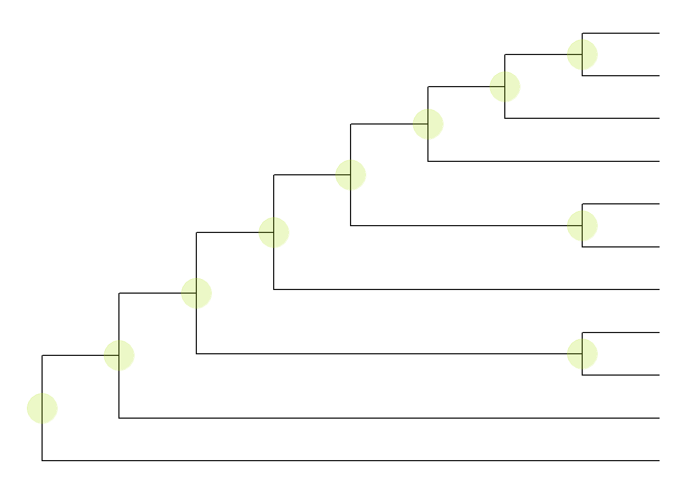
plot(Monocots, label.offset=1.5)
tiplabels("1", 1, frame = "n", adj=-0.2)
tiplabels("A", 2, frame = "n", adj=-0.2)
tiplabels("teste", 3, frame = "n", adj=-0.2)
- Vamos plotar gráficos de barras e pizza nos terminais com os argumentos
thermoepie:
plot(Monocots, label.offset = 1)
tiplabels(pie = runif(11), cex = 1)
15.5.1.3 Nós
Anotando texto nos nós:
- Vamos plotar etiquetas e textos nos nós com a função
nodelabels():
plot(plants.tree)
nodelabels()plot(plants.tree)
nodelabels("Tracheophyta", 28, frame = "none")
nodelabels("Angiospermae", 29, frame = "n")
- Vamos plotar gráficos de barras e pizza nos nós com os argumentos
thermoepie. Vamos usar a funçãorunif() para gerar números aleatórios de 0 a 1:
plot(Monocots)
nodelabels(thermo = runif(10), cex = 0.7)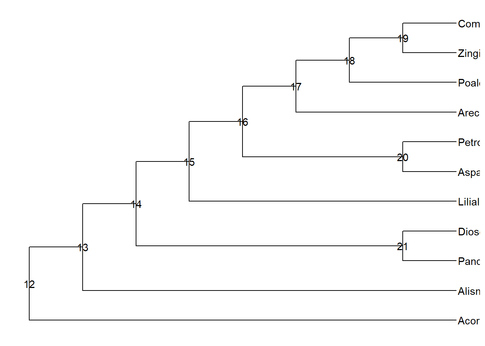
plot(Monocots)
nodelabels(thermo = runif(10), cex = 0.7, horiz = TRUE)
plot(Monocots)
nodelabels(pie = runif(10), cex = 0.7)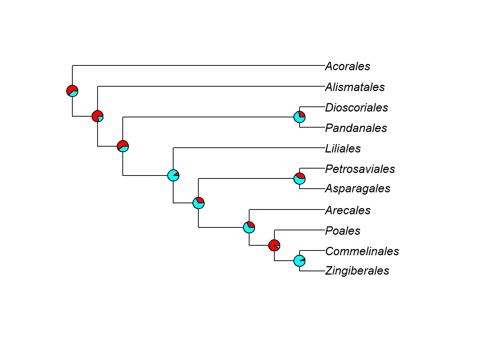
- Vamos plotar gráficos de barras e pizza nos nós com mais de duas proporções:
prop_x <- runif(22, 0, 0.33)
prop_y <- runif(22, 0, 0.33)
prop_z <- runif(22, 0, 0.33)
prop_w <- cbind(prop_x, prop_y, prop_z, 1 - prop_x - prop_y - prop_z)
head(prop_w)## prop_x prop_y prop_z
## [1,] 0.306681886 0.1483748 0.32694944 0.2179939
## [2,] 0.250349748 0.1999361 0.17664547 0.3730687
## [3,] 0.159492823 0.1136172 0.05589211 0.6709978
## [4,] 0.004570973 0.2604854 0.10295672 0.6319869
## [5,] 0.017257825 0.1140846 0.13437927 0.7342783
## [6,] 0.242055806 0.1133446 0.29209916 0.3525005layout(matrix(1:3, 1, 3))
plot(Monocots, "c")
nodelabels(thermo = prop_w, cex = 1.4)
plot(Monocots, "c")
nodelabels(thermo = prop_w, cex = 1.4, horiz = TRUE)
plot(Monocots, "c")
nodelabels(pie = prop_w, cex = 2)
15.5.2 Pacote phytools
O pacote phytools não implementa funções específicas para escrever nos terminais e ramos, mas sim para os nós.
15.5.2.1 Nós
Descubra os números dos nós com o argumento node.numbers:
plotTree(Monocots, node.numbers = TRUE)
Plote nomes nos nós:
plotTree(plants.tree)
labels <- c("Nome1", "Nome2", "Nome3")
labelnodes(text = labels, node = c(25, 26, 27), shape = "ellipse", cex = 0.8,
interactive = FALSE)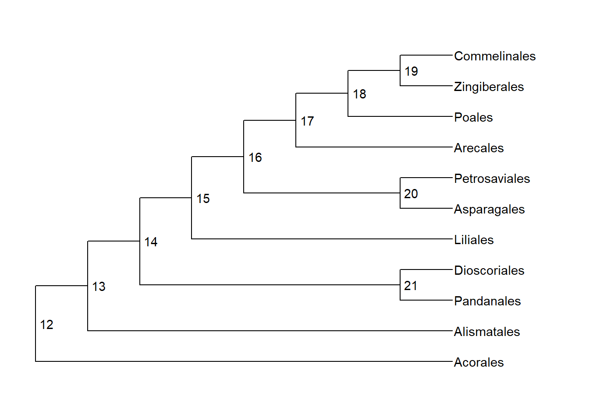
Adicionar nomes aos nós interativamente: (Retire os símbolos # da frente dos comandos)
# plotTree(plants.tree) labelnodes(text = labels, shape = 'ellipse',
# cex = 0.8, interactive = TRUE)Adicione nomes aos clados ao lado dos Terminais em árvore do tipo phylogram e cladogram: (Apenas os nós delimitam a chave)
plotTree(plants.tree)
cladelabels(text = "Monilófita", node = 41, offset = 11)
cladelabels(text = "Angiospermas", node = 30, offset = 11)
Adicione nomes aos clados ao lado dos terminais em árvore do tipo fan. Com o argumento ylim estabeleça os limites da plotagem:
plotTree(plants.tree, type = "fan", fsize = 0.7, ylim = c(-2, 2), offset = 1)
arc.cladelabels(text = "Gimnospermas", node = 38, ln.offset = 1.6, lab.offset = 1.8,
orientation = "curved")
arc.cladelabels(text = "Angiospermas", node = 30, ln.offset = 1.8, lab.offset = 2,
orientation = "curved")
Adicionando uma barra de erro nos nós com o método plotTree.errorbars():
15.6 Plotando matrizes, data.frames e árvore ao lado da árvore usando R
…
15.6.1 Pacote ape
O pacote ape possui três funções para plotar matrizes, dataframes, e outra árvore ao lado de uma árvore (tanglegram): phydataplot(), ring() e cophyloplot().
15.6.1.1 Matriz e data.frame
15.6.1.1.1 Dados contínuos
Plote diferentes layouts ao lado da árvore:
data <- c(2,3,1,2,7,5,4,10,13,12,11)
names(data) <- Monocots$tip.label
plot(Monocots, x.lim = 60)
phydataplot(data, Monocots, offset = 14)
plot(Monocots, x.lim = 60)
phydataplot(data, Monocots, offset = 14, col = "yellow")plot(Monocots, x.lim = 60)
phydataplot(data, Monocots, offset = 14, "d")plot(Monocots, x.lim = 60)
phydataplot(data, Monocots, offset = 14, "s", lwd = 3)tx <- rcoal(m <- 20)
X <- runif(m, 0, 0.5); Y <- runif(m, 0, 0.5)
X <- cbind(X, Y, 1 - X - Y)
X## X Y
## [1,] 0.43494695 0.18772496 0.37732809
## [2,] 0.43231669 0.11898272 0.44870059
## [3,] 0.42083297 0.06173948 0.51742755
## [4,] 0.43498017 0.14519520 0.41982463
## [5,] 0.45717500 0.46292029 0.07990471
## [6,] 0.01248602 0.32334597 0.66416801
## [7,] 0.29105773 0.34160247 0.36733979
## [8,] 0.22742035 0.30388164 0.46869800
## [9,] 0.11713883 0.36509005 0.51777113
## [10,] 0.22263731 0.09401598 0.68334671
## [11,] 0.03956020 0.06370977 0.89673003
## [12,] 0.48264435 0.43742493 0.07993071
## [13,] 0.36857966 0.12534923 0.50607111
## [14,] 0.14861796 0.01894267 0.83243938
## [15,] 0.33521755 0.17139430 0.49338815
## [16,] 0.31597847 0.14045088 0.54357066
## [17,] 0.45150202 0.48654106 0.06195691
## [18,] 0.05439802 0.44319834 0.50240364
## [19,] 0.38683552 0.06043763 0.55272685
## [20,] 0.06542177 0.24565077 0.68892746rownames(X) <- tx$tip.label
plot(tx, x.lim = 6)
co <- rgb(diag(3))
phydataplot(X, tx, col = co)
par(mar=c(3, 3, 3, 3))
Z <- matrix(rnorm(m * 5), m)
rownames(Z) <- rownames(X)
plot(tx, x.lim = 5)
phydataplot(Z, tx, "bo", scaling = .5, offset = 0.5, boxfill = c("gold", "skyblue"))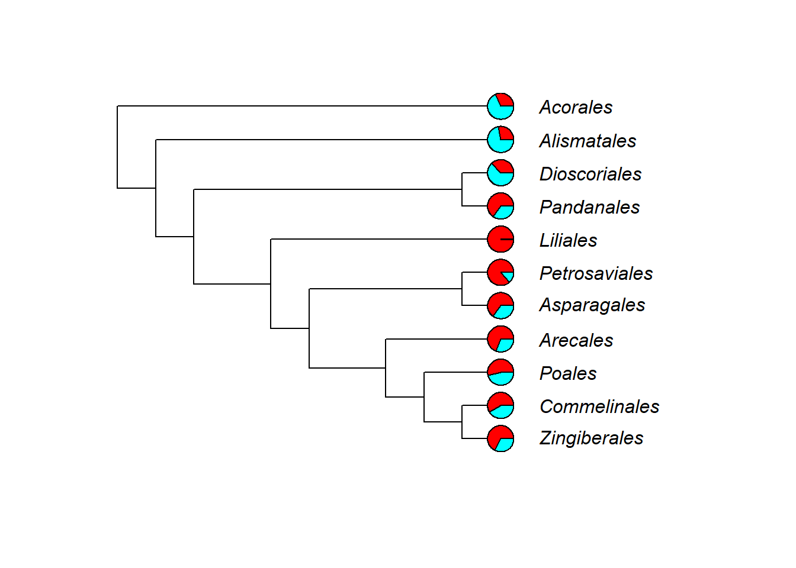
15.6.1.1.2 Dados discretos
Plote uma matriz de diferentes estados para carda caráter com cores diferentes:
c1 <- rep(c("estado 1", "estado 2", "estado 3"), 10/2)
names(c1) <- Monocots$tip.label
c2 <- rep(c("estado 4", "estado 5", "estado 6"), 10/2)
names(c2) <- Monocots$tip.label
c3 <- rep(c("estado 2", "estado 3", "estado 4"), 10/2)
names(c3) <- Monocots$tip.label
matriz_c <- cbind(c1, c2, c3)
plot(Monocots, x.lim = 60)
phydataplot(matriz_c, Monocots, "m", width = 2, offset = 14, legend = "side")
15.6.1.2 Anéis em árvores circulares
A função ring() plota dados contínuos e discretos em árvores do tipo “fan”.
15.6.1.2.1 Dados contínuos
Plote uma barra de proporções igual a 1:
plot(tx, "f", show.tip.label = FALSE, open.angle = 180, x.lim = c(-1, 2), y.lim = c(-2,
3.1))
ring(X, tx, col = co, offset = 0.05)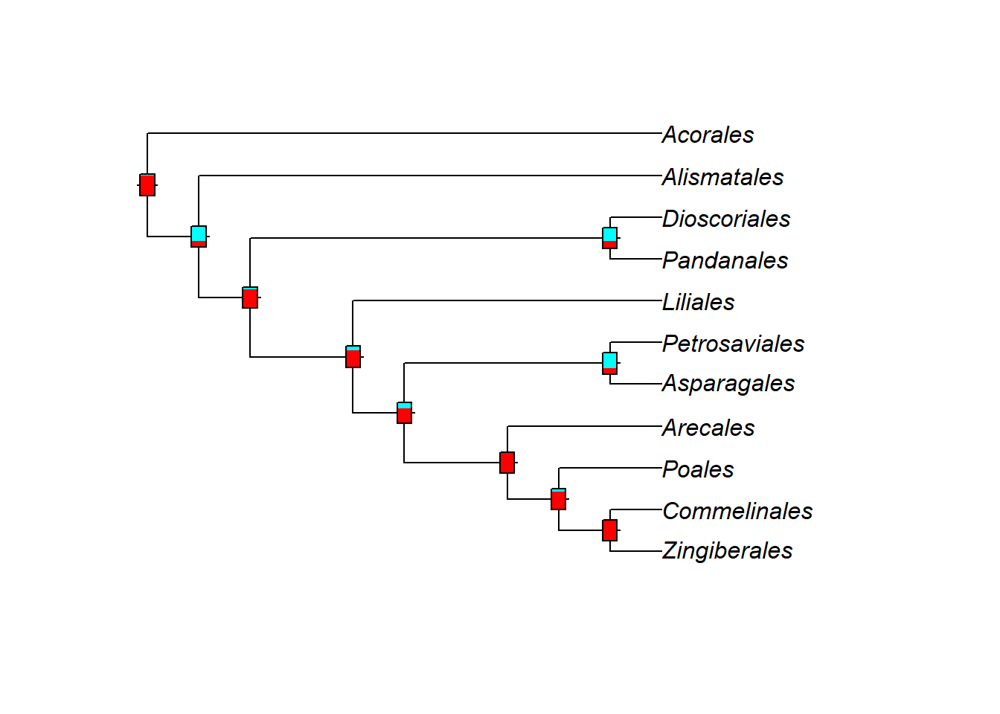
Plote mais de um anel de carateres:
ts <- rcoal(100)
X1 <- rTraitCont(ts)
X2 <- rTraitCont(ts)
X3 <- rTraitCont(ts)
co <- c("blue", "red")
X1 <- X1 + abs(min(X1))
X2 <- X2 + abs(min(X2))
X3 <- X3 + abs(min(X3))
op <- par(mar = rep(0, 4))
par(xpd = TRUE, mar = op$mar)
plot(ts, "f", show.tip.label = FALSE, x.lim = c(-3, 3), y.lim = c(-3, 3),
open.angle = 30)
phydataplot(X1, ts, "s", col = co, offset = 0.1, lwd = 5)
ring(X2, ts, "ring", col = co, offset = max(X) + 0.3, lwd = 4)
ring(X3, ts, "ring", col = co, offset = max(X) + 0.7, lwd = 4)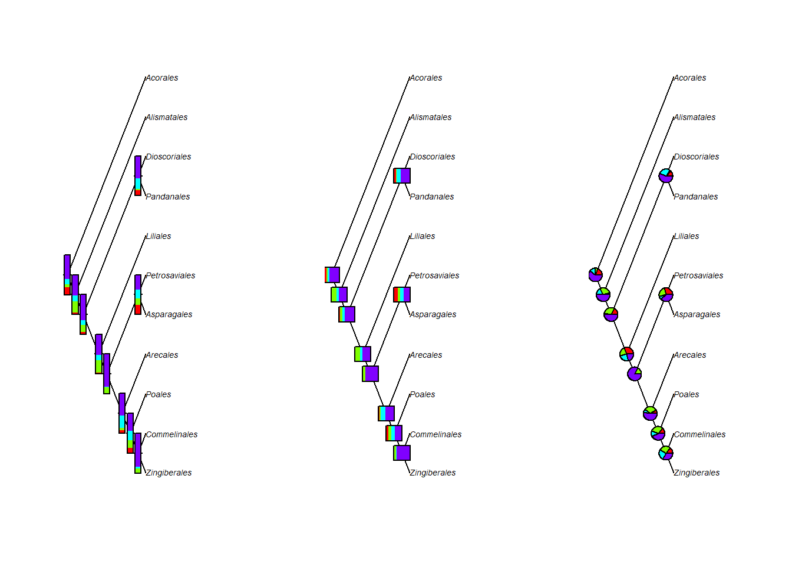
15.6.1.2.2 Dados discretos
Plote duas camadas de anéis:
co <- c("lightblue", "yellow")
co2 <- c("lightgreen", "lightpink")
op <- par(mar = rep(0, 4))
par(xpd = TRUE, mar = op$mar)
plot(ts, "r", cex = 0.5)
ring(0.1, ts, "r", col = sample(co, size = 100, rep = TRUE), offset = 0.3)
ring(0.1, ts, "r", col = sample(co2, size = 100, rep = TRUE), offset = 0.5)
15.6.1.3 Tanglegram
# Gerar 2 árvores aleatórias com 10 terminais com a função rtree(). As árvores
# não precisam conter exatamente os mesmos terminais, mas as linhas serão
# formadas apenas nos terminais com nomes iguais.
tree1 <- rtree(10)
tree2 <- rtree(10)
# Criação de uma matriz de associação:
association <- cbind(tree2$tip.label, tree2$tip.label)
cophyloplot(tree1, tree2, assoc = association, length.line = 4, space = 28, gap = 3)
# Rotacionar árvore interativamente com argumento rotate: (Retire o # da frente
# do comando) cophyloplot(tree1, tree2, assoc = association, length.line = 4,
# space = 28, gap = 3, rotate = TRUE)15.6.2 Pacote phytools
O pacote phytools possui a função dotTree() e mais três métodos específicos da função plotTree() para plotar círculos, barras, matrizes e boxplots: plotTree.barplot(), plotTree.datamatrix() e plotTree.boxplot():
15.6.2.1 Círculos
Plote esferas com tamanho diferenciado de acordo com dados contínuos com a função dotTree():
# Vamos obter a árvore e dados do Blog oficial o pacote Phytools:
tree <- ape::read.tree("http://www.phytools.org/Cordoba2017/data/tree.tre")
x <- as.matrix(read.csv("http://www.phytools.org/Cordoba2017/data/x.csv",
row.names = 1))[, 1]
# Agora plote:
dotTree(tree, x, length = 10, ftype = "i")
Plote círculos coloridos para representar caracteres discretos:
eel.tree <- read.tree("http://www.phytools.org/Cordoba2017/data/elopomorph.tre")
eel.data <- read.csv("http://www.phytools.org/Cordoba2017/data/elopomorph.csv",
row.names = 1)
fmode <- as.factor(setNames(eel.data[, 1], rownames(eel.data)))
dotTree(eel.tree, fmode, colors = setNames(c("blue", "red"), c("suction",
"bite")), ftype = "i", fsize = 0.7)15.6.2.2 Barras
Plote barras com tamanho diferenciado de acordo com dados contínuos com o método plotTree.barplot(). Utilizaremos os mesmos dados obtidos a cima:
plotTree.barplot(tree, x)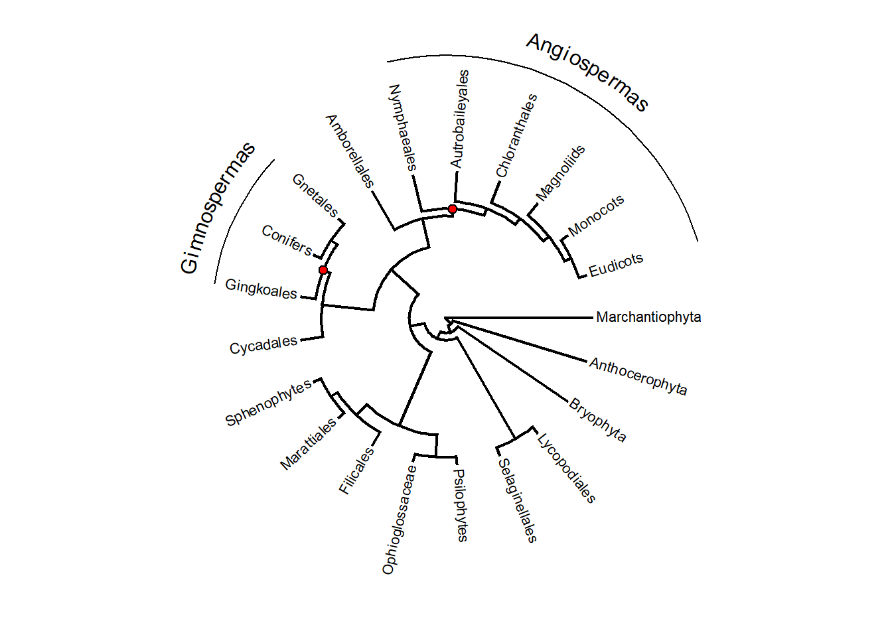
Experimente colorir as barras do exemplo a cima:
plotTree.barplot(tree, x, args.barplot = list(col = sapply(x, function(x) if (x >=
0) "blue" else "red"), xlim = c(-4, 4)))
Plote mais de um caráter: (os objetos tx e X foram usados no exercício do pacote ape)
plotTree.barplot(tx, X)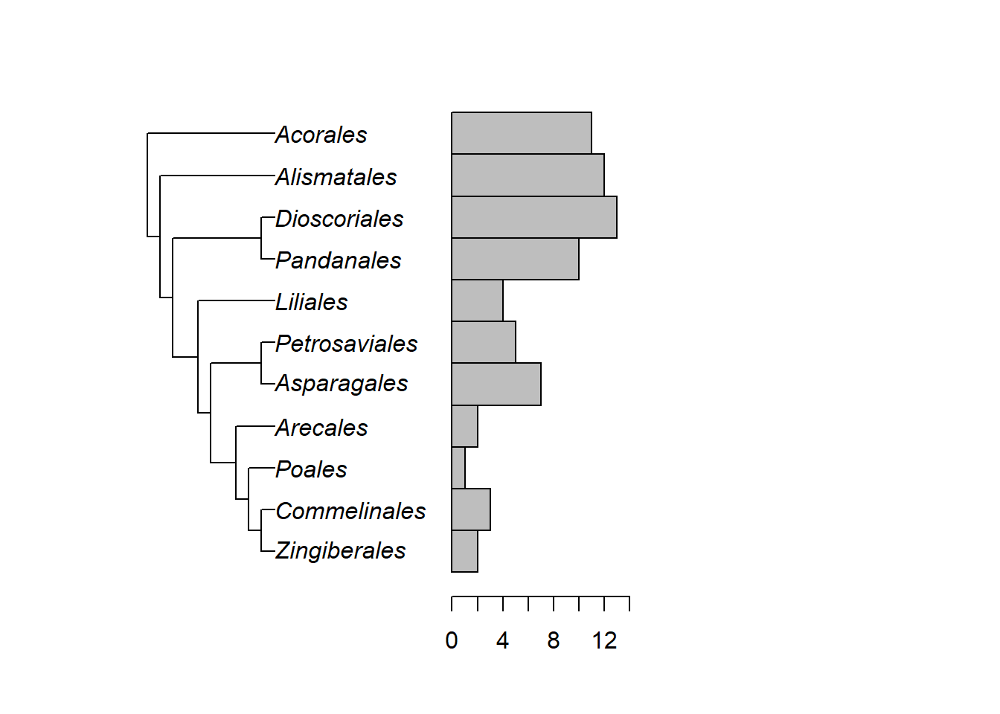
Plote mais de um caráter em barras separadas:
plotTree.barplot(tx, X, args.barplot = list(beside = TRUE, xlim = c(0,
1), legend.text = TRUE, space = c(0, 1.2), args.legend = list(x = 1,
y = 24)))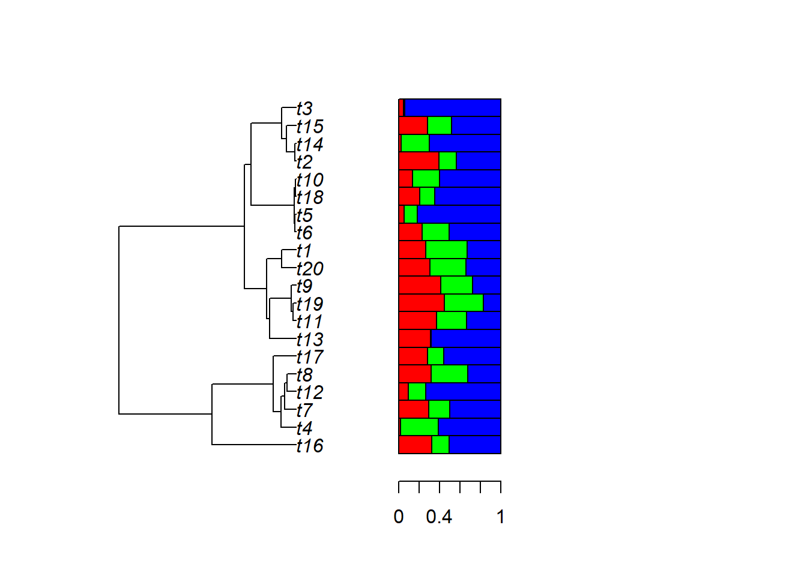
Teste também uma outra opção implementada no phytools, a o método plotTree.wBars(): [http://blog.phytools.org/2015/04/plottreewbars-with-tip-labels.html]
tip.label <- replicate(200, paste(sample(LETTERS, 1), "._", paste(sample(letters,
round(runif(n = 1, min = 4, max = 8))), collapse = ""), sep = ""))
tree <- pbtree(n = 200, tip.label = tip.label, scale = 1)
x <- abs(fastBM(tree))
plotTree.wBars(tree, x, fsize = 0.4, scale = 0.1, tip.labels = TRUE, type = "fan",
lwd = 1, offset = 1)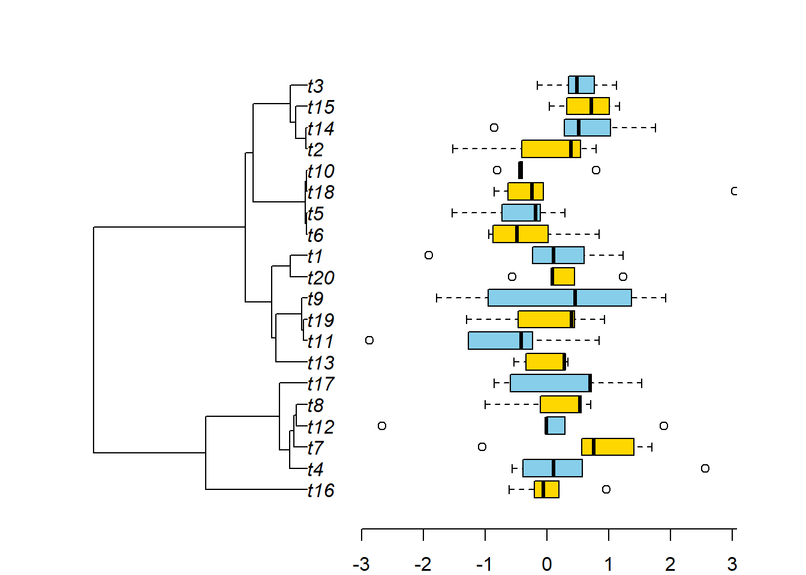
15.6.2.3 Matrizes
Plote uma matriz com dados discretos com o método plotTree.datamatrix():
library(phytools)
tree <- rtree(n = 40)
Q1 <- matrix(c(-1, 1, 1, -1), 2, 2, dimnames = list(0:1, 0:1))
x1 <- sim.Mk(tree, Q1)
Q2 <- matrix(c(-1, 1, 0, 1, -2, 1, 0, 1, -1), 3, 3, dimnames = list(letters[1:3],
letters[1:3]))
x2 <- sim.Mk(tree, Q2)
Q3 <- matrix(c(-0.5, 0.5, 0.5, -0.5), 2, 2, dimnames = list(c("rough",
"smooth"), c("rough", "smooth")))
x3 <- sim.Mk(tree, Q3)
Q4 <- matrix(c(-3, 1, 1, 1, 1, -3, 1, 1, 1, 1, -3, 1, 1, 1, 1, -3), 4,
4, dimnames = list(LETTERS[1:4], LETTERS[1:4]))
x4 <- sim.Mk(tree, Q4)
X <- data.frame(x1, x2, x3, x4)
colnames(X) <- c("Trait 1", "Trait 2", "Trait 3", "Trait 4")
object <- plotTree.datamatrix(tree, X, sep = 0, srt = 90, yexp = 1.1, xexp = 1.1,
fsize = 0.8, space = 0.2)## Loading required package: RColorBrewer## Warning: package 'RColorBrewer' was built under R version 4.0.5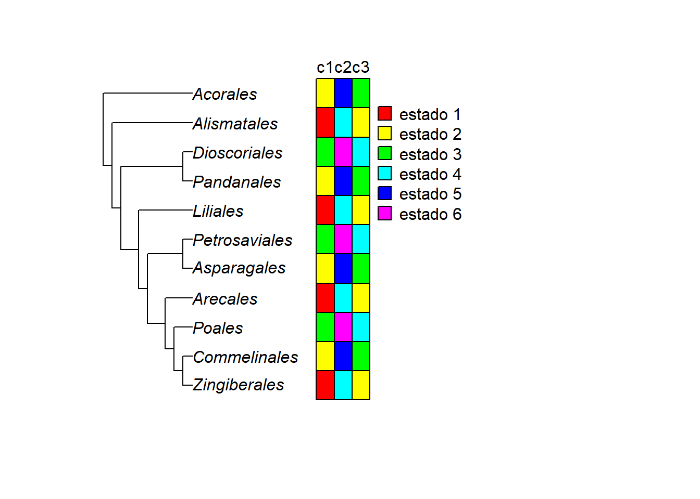
Faça algumas alterações no estilo da matriz:
object <- plotTree.datamatrix(tree, X, sep = 0, srt = 70, yexp = 1.05,
fsize = 0.8)
x <- object$end.x + diff(par()$usr[1:2]) * 0.01
y <- Ntip(tree)
for (i in 1:ncol(X)) {
text(x, y, colnames(X)[i], pos = 4, cex = 0.9, offset = 0)
add.simmap.legend(colors = object$colors[[i]], shape = "square", prompt = FALSE,
x = x, y = y - 2 * strheight("W") * 0.9, fsize = 0.9)
y <- y - 1.5 * 0.9 * strheight("W") * (length(object$colors[[i]]) -
1) - 6
}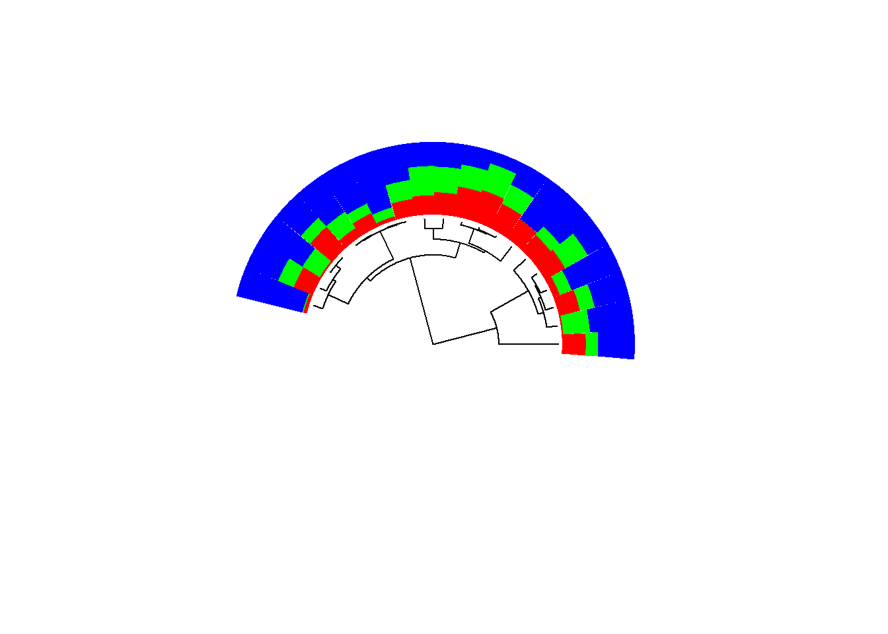
15.6.2.4 Boxplots
tree <- pbtree(n = 26, tip.label = LETTERS[26:1])
# Simule species means
x <- fastBM(tree)
# Simule diferentes amostras de cada terminal (5 por terminal):
xe <- sampleFrom(x, setNames(rep(0.5, Ntip(tree)), tree$tip.label), setNames(rep(5,
Ntip(tree)), tree$tip.label))
plotTree.boxplot(tree, xe)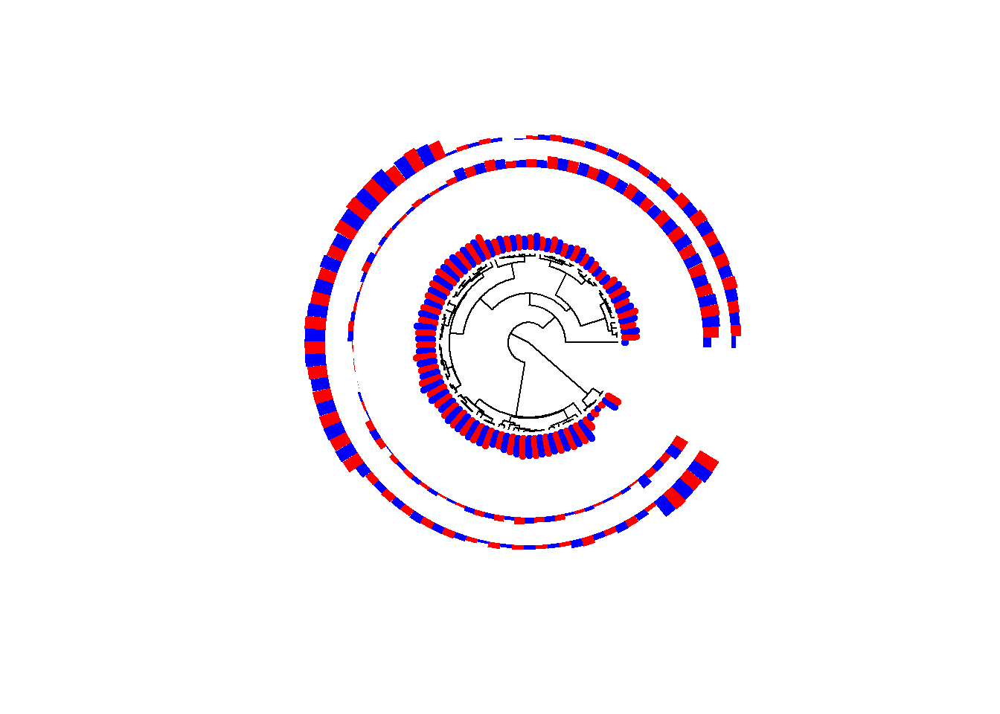
15.6.2.5 Tanglegram
Gere duas ávores aleatórias com os mesmos terminais:
t1 <- rtree(n = 20, tip.label = letters[1:20])
t2 <- rtree(n = 20, tip.label = letters[1:20])Crie o objeto de classe cophylo com a função de mesmo nome:
obj <- cophylo(t1, t2)## Rotating nodes to optimize matching...
## Done.Plote o objeto criado com a função plot.cophylo:
plot.cophylo(obj)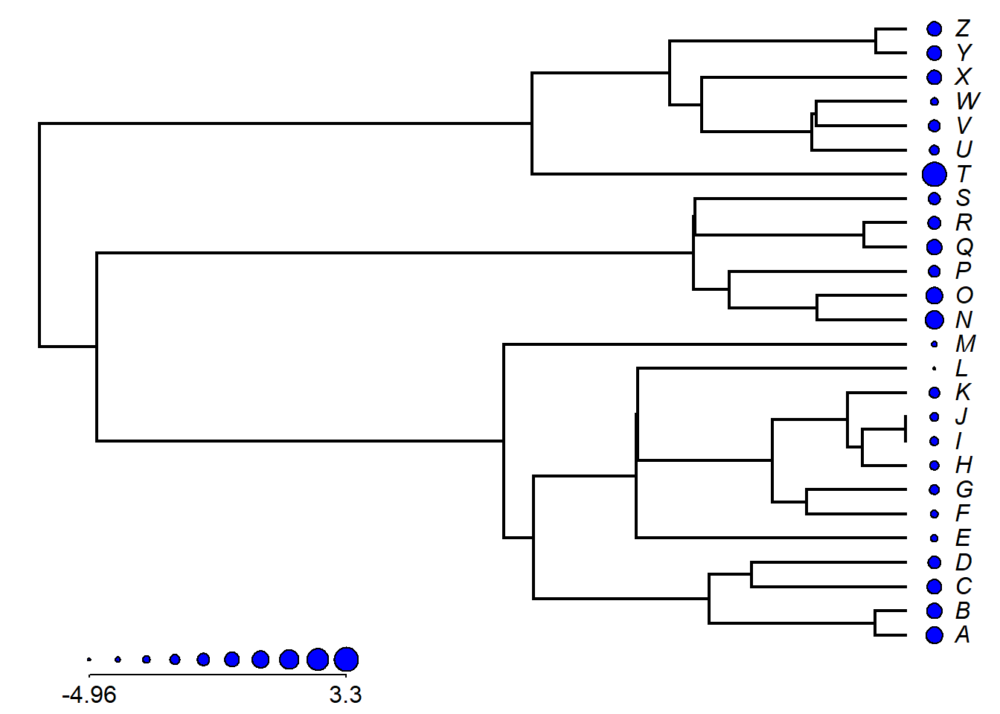
Altere parâmetros estéticos com argumentos da função plot.cophylo. Altere a espessura dos ramos da árvore com o argumento lwd. Altere a estética da linha que une os terminais com o argumento link.type = “curved”:
plot.cophylo(obj, lwd = 2, link.type = "curved")
Altere o tipo de linha com o argumento link.lty:
plot(obj, link.lty = 0)
plot(obj, link.lty = 1)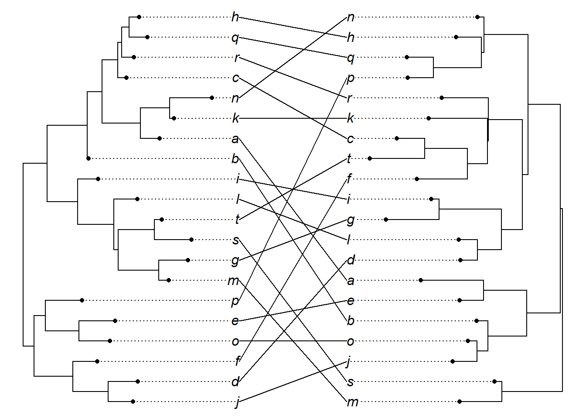
plot(obj, link.lty = 2)plot(obj, link.lty = 3)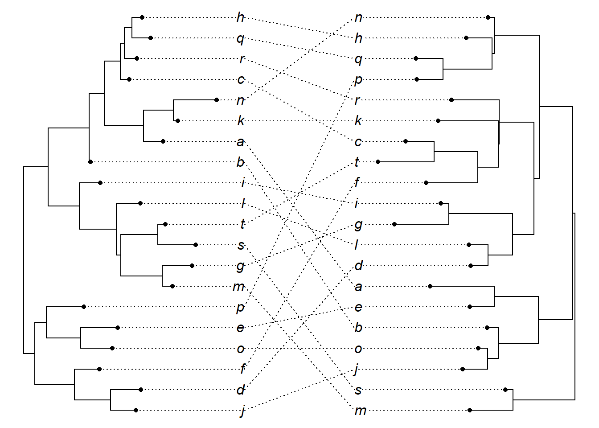
plot(obj, link.lty = 4)
Altere a cor da linha que une os terminais das árvores com o argumento link.col.
plot(obj, link.col = "red")
Aplique uma transparência na cor com a função make.transparent:
plot(obj, link.lwd = 3, link.lty = 1, link.col = make.transparent("blue", 0.25))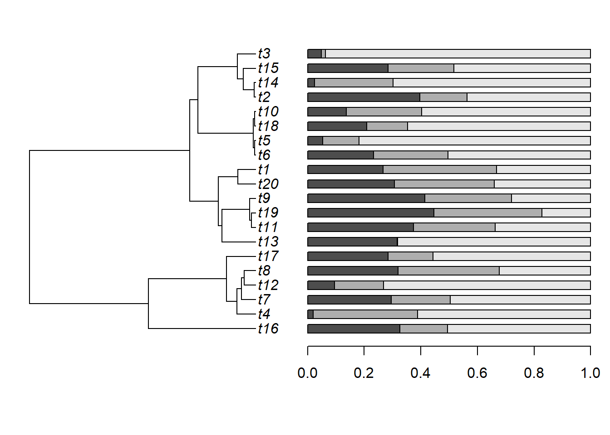
Retire os pontos do final dos ramos com o argumento pts = FALSE:
plot(obj, pts = FALSE)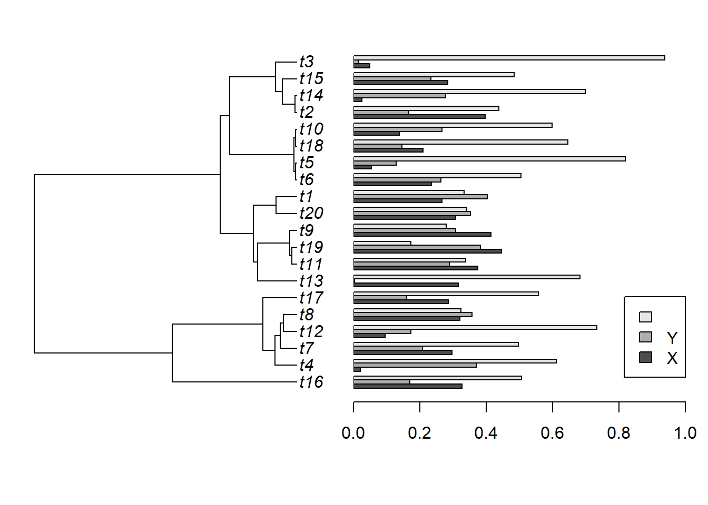
Altere os pontos do final dos ramos com a método tiplabels.cophylo:
plot(obj)
tiplabels.cophylo(pie = to.matrix(rep(1, Ntip(obj$trees[[1]])), "1"), cex = 0.3,
piecol = "red")
tiplabels.cophylo(pie = to.matrix(rep(1, Ntip(obj$trees[[2]])), "1"), cex = 0.3,
piecol = "grey", which = "right")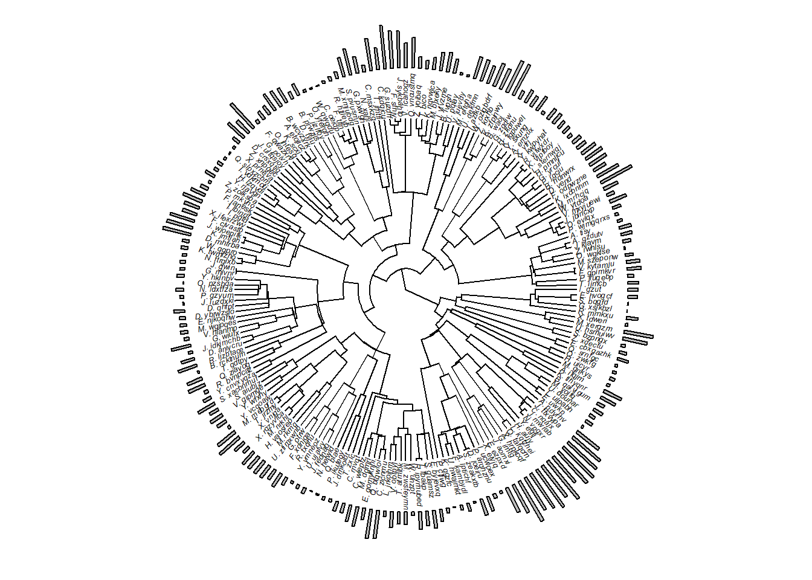
Remova os nomes ou altere a fonte dos terminais com o argumento ftype:
plot(obj, ftype = "off")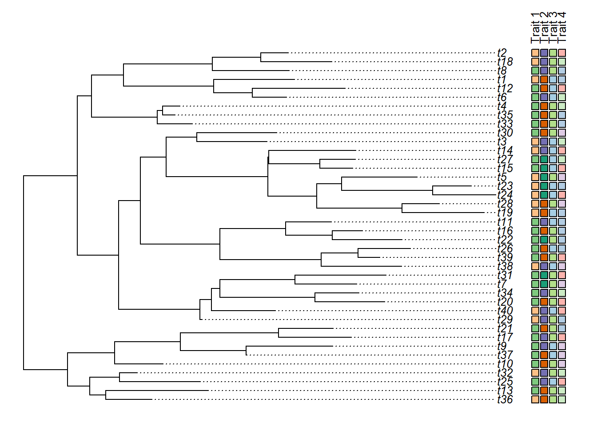
plot(obj, ftype = "b")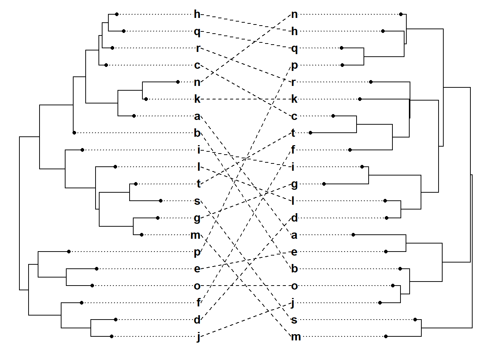
Altere o tamanho da fonte dos terminais com o argumento fsize:
plot(obj, fsize = 1.3)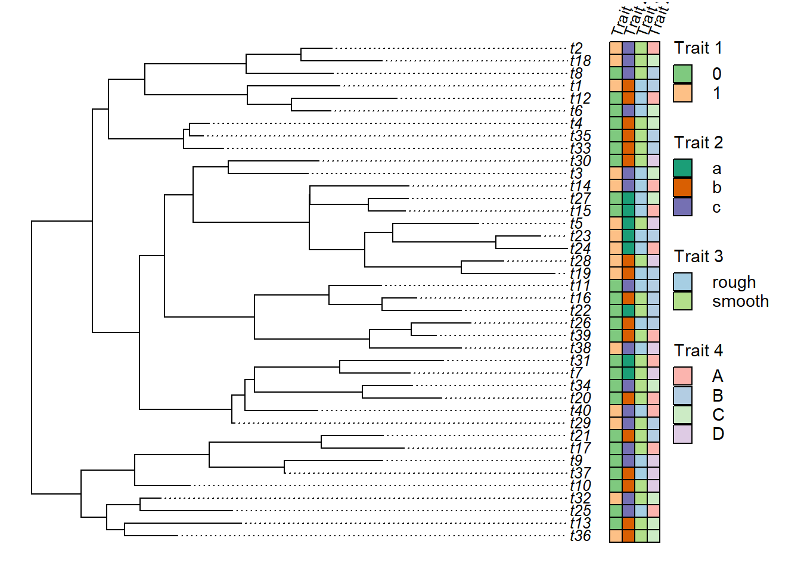
Altere a linha que une a árvore aos terminais. Altere o tipo de linha com o argumento tip.lty (0 = sem linha). Altere a distância entre a árvore e os terminais com o argumento tip.len. Altere a distância entre os terminais de ambas as árvores com o argumento part:
plot(obj, tip.lty = 0, tip.len = 0.05, part = 0.35)Agora veja esse estilo:
plot(obj, link.type = "curved", link.lwd = 3, link.lty = 1, lwd = 2,
link.col = make.transparent("blue", 0.25), fsize = 1.2)15.6.2.6 Phylo.to.map
Conheça a função phylo.to.map() para plotar um mapa com coordenadas geográficas ao lado da árvore. No código abaixo, estamos gerando dados aleatórios:
tree <- pbtree(n = 26, scale = 100)
tree$tip.label <- LETTERS[26:1]
lat <- fastBM(tree, sig2 = 10, bounds = c(-90, 90))
long <- fastBM(tree, sig2 = 80, bounds = c(-180, 180))
xx <- phylo.to.map(tree, cbind(lat, long), plot = FALSE)## objective: 236## objective: 112## objective: 110
## objective: 110## objective: 108## objective: 106
## objective: 106
## objective: 106
## objective: 106## objective: 92
## objective: 92
## objective: 92
## objective: 92
## objective: 92## objective: 88
## objective: 88
## objective: 88
## objective: 88## objective: 82## objective: 76## objective: 72
## objective: 72
## objective: 72
## objective: 72
## objective: 72plot(xx, type = "phylogram", asp = 1.3, mar = c(0.1, 0.5, 3.1, 0.1))Veja um exemplo pronto com dados reais (Fig. @ref{fig:Phylo.to.map}):
15.6.2.7 Escala estratigráfica
Plote a escala estratigráfica, com dados gerados aleatoriamente, com a função geo.legend() [http://blog.phytools.org/2017/05/new-features-in-geolegend-for-adding.html]:
tree <- pbtree(b = 0.03, d = 0.01, n = 200)
h <- max(nodeHeights(tree))
# Primeiro ajuste a legenda sem plotar a árvore:
plotTree(tree, plot = FALSE)
obj <- geo.legend(alpha = 0.3, cex = 1.2, plot = T)# plote a árvore e a legenda estratigráfica:
plotTree(tree, ftype = "off", ylim = c(-0.2*Ntip(tree), Ntip(tree)), lwd = 1)
geo.legend(leg = obj$leg, colors = obj$colors, cex = 1.2)15.6.3 Estimação do estado ancestral usando R
As análises de estimação do estado ancestral, ou reconstrução do caráter ancestral do ponto-de-vista da parsimônia, são utilizadas para investigar a evolução de caracteres. Como serão utilizados métodos probabilísticos, o termo correto é estimação e não reconstrução.